Θέμα 218 (Seq 1)
Σύνολο εικόνων/πινάκων: 3
Ποιο από τα παρακάτω ισχύει στη σαρκοείδωση:
📋 ΠΙΝΑΚΑΣ / ΣΧΗΜΑ (M4_Q218_TAB_01.png)
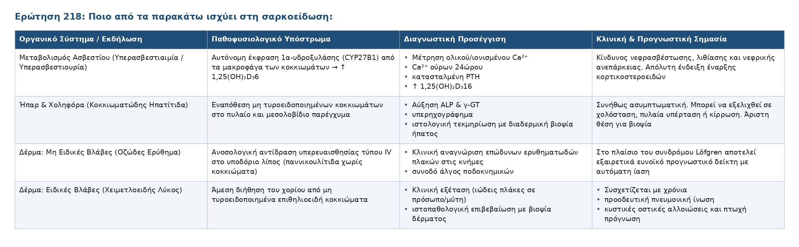
M4_Q218_TAB_01.png
📋 ΠΙΝΑΚΑΣ / ΣΧΗΜΑ (M4_Q218_TAB_02.png)
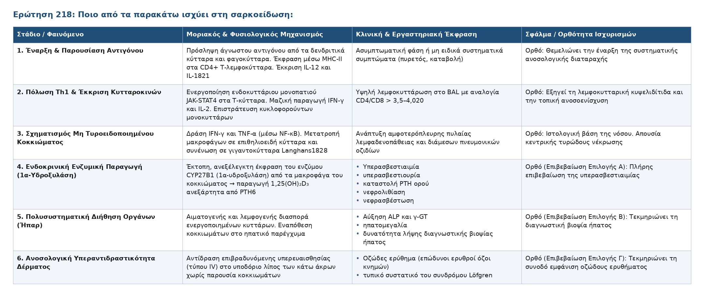
M4_Q218_TAB_02.png
📋 ΠΙΝΑΚΑΣ / ΣΧΗΜΑ (M4_Q218_TAB_03.png)
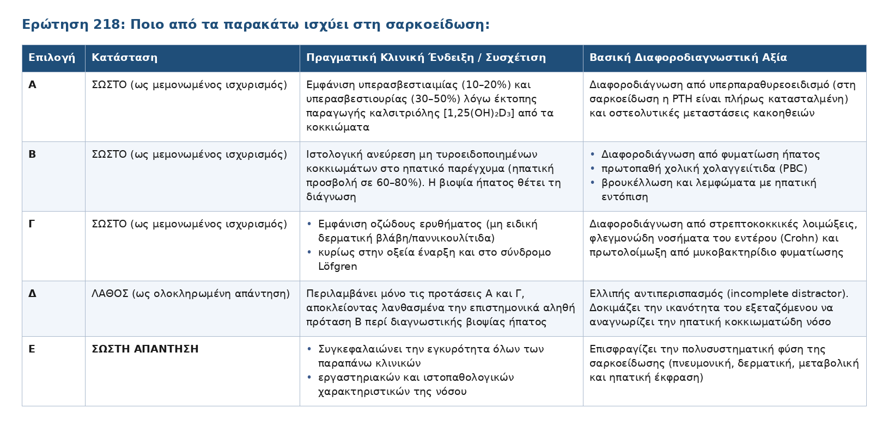
M4_Q218_TAB_03.png
Θέμα 219 (Seq 2)
Σύνολο εικόνων/πινάκων: 3
Η πιο σημαντική ανεπιθύμητη ενέργεια της καρμιβαζόλης είναι:
📋 ΠΙΝΑΚΑΣ / ΣΧΗΜΑ (M4_Q219_TAB_01.png)
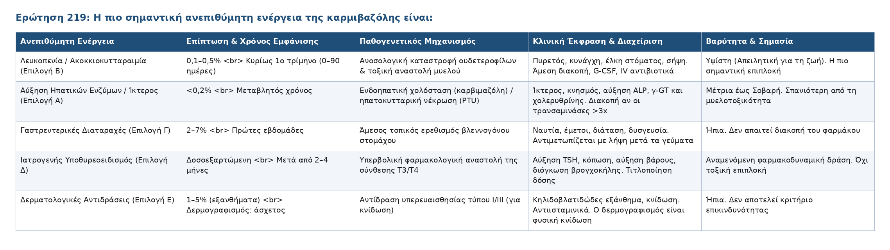
M4_Q219_TAB_01.png
📋 ΠΙΝΑΚΑΣ / ΣΧΗΜΑ (M4_Q219_TAB_02.png)
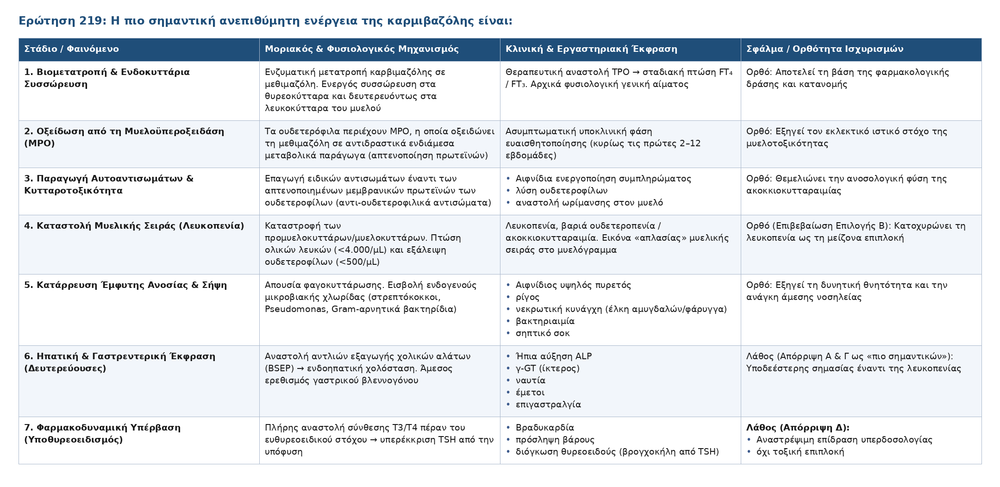
M4_Q219_TAB_02.png
📋 ΠΙΝΑΚΑΣ / ΣΧΗΜΑ (M4_Q219_TAB_03.png)

M4_Q219_TAB_03.png
Θέμα 220 (Seq 3)
Σύνολο εικόνων/πινάκων: 3
Ποιο από τα παρακάτω φάρμακα είναι αποτελεσματικό για τα αναερόβια μικρόβια:
📋 ΠΙΝΑΚΑΣ / ΣΧΗΜΑ (M4_Q220_TAB_01.png)
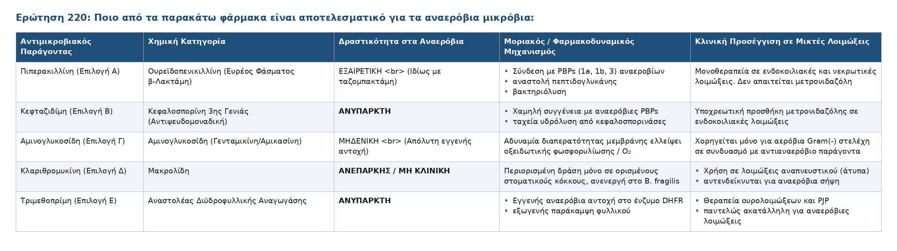
M4_Q220_TAB_01.png
📋 ΠΙΝΑΚΑΣ / ΣΧΗΜΑ (M4_Q220_TAB_02.png)

M4_Q220_TAB_02.png
📋 ΠΙΝΑΚΑΣ / ΣΧΗΜΑ (M4_Q220_TAB_03.png)

M4_Q220_TAB_03.png
Θέμα 221 (Seq 4)
Σύνολο εικόνων/πινάκων: 3
Όλα τα παρακάτω είναι στόχος της θεραπευτικής αγωγής σε διαβητικούς ασθενείς, εκτός από:
📋 ΠΙΝΑΚΑΣ / ΣΧΗΜΑ (M4_Q221_TAB_01.png)
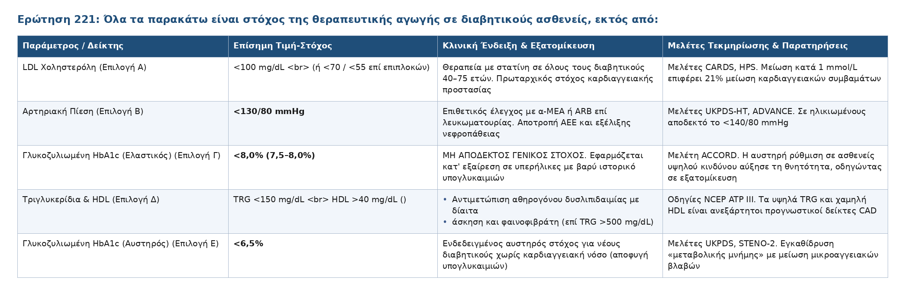
M4_Q221_TAB_01.png
📋 ΠΙΝΑΚΑΣ / ΣΧΗΜΑ (M4_Q221_TAB_02.png)
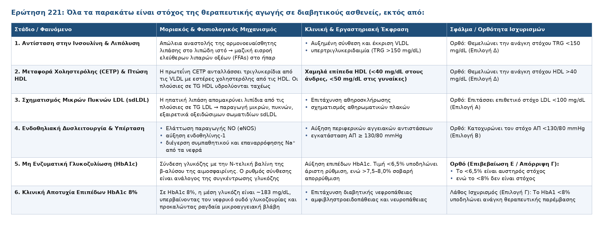
M4_Q221_TAB_02.png
📋 ΠΙΝΑΚΑΣ / ΣΧΗΜΑ (M4_Q221_TAB_03.png)
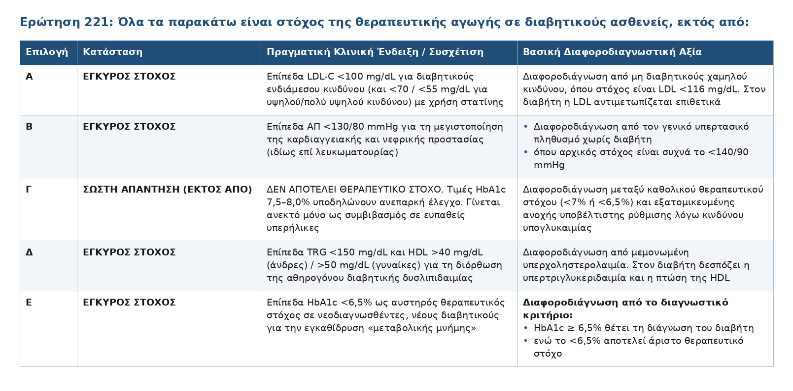
M4_Q221_TAB_03.png
Θέμα 222 (Seq 5)
Σύνολο εικόνων/πινάκων: 3
Οι αμινογλυκοσίδες είναι αποτελεσματικές:
📋 ΠΙΝΑΚΑΣ / ΣΧΗΜΑ (M4_Q222_TAB_01.png)

M4_Q222_TAB_01.png
📋 ΠΙΝΑΚΑΣ / ΣΧΗΜΑ (M4_Q222_TAB_02.png)

M4_Q222_TAB_02.png
📋 ΠΙΝΑΚΑΣ / ΣΧΗΜΑ (M4_Q222_TAB_03.png)

M4_Q222_TAB_03.png
Θέμα 223 (Seq 6)
Σύνολο εικόνων/πινάκων: 3
Όσον αφορά την αντιπηκτική αγωγή όλα τα παρακάτω είναι σωστά, εκτός από:
📋 ΠΙΝΑΚΑΣ / ΣΧΗΜΑ (M4_Q223_TAB_01.png)

M4_Q223_TAB_01.png
📋 ΠΙΝΑΚΑΣ / ΣΧΗΜΑ (M4_Q223_TAB_02.png)
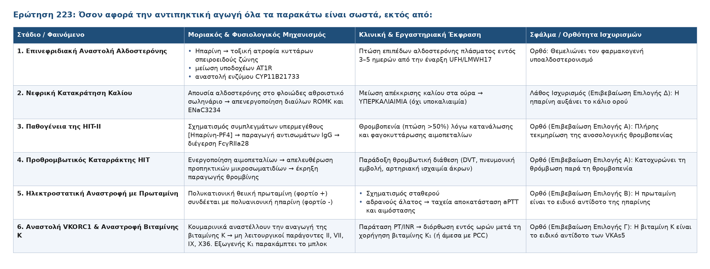
M4_Q223_TAB_02.png
📋 ΠΙΝΑΚΑΣ / ΣΧΗΜΑ (M4_Q223_TAB_03.png)

M4_Q223_TAB_03.png
Θέμα 224 (Seq 7)
Σύνολο εικόνων/πινάκων: 3
Όλα τα παρακάτω είναι φάρμακα πρώτης επιλογής για τη θεραπεία της καρδιακής ανεπάρκειας, εκτός από:
📋 ΠΙΝΑΚΑΣ / ΣΧΗΜΑ (M4_Q224_TAB_01.png)

M4_Q224_TAB_01.png
📋 ΠΙΝΑΚΑΣ / ΣΧΗΜΑ (M4_Q224_TAB_02.png)

M4_Q224_TAB_02.png
📋 ΠΙΝΑΚΑΣ / ΣΧΗΜΑ (M4_Q224_TAB_03.png)

M4_Q224_TAB_03.png
Θέμα 225 (Seq 8)
Σύνολο εικόνων/πινάκων: 3
Για τη διάγνωση της οξείας ηπατίτιδας Β απαιτείται:
📋 ΠΙΝΑΚΑΣ / ΣΧΗΜΑ (M4_Q225_TAB_01.png)

M4_Q225_TAB_01.png
📋 ΠΙΝΑΚΑΣ / ΣΧΗΜΑ (M4_Q225_TAB_02.png)

M4_Q225_TAB_02.png
📋 ΠΙΝΑΚΑΣ / ΣΧΗΜΑ (M4_Q225_TAB_03.png)
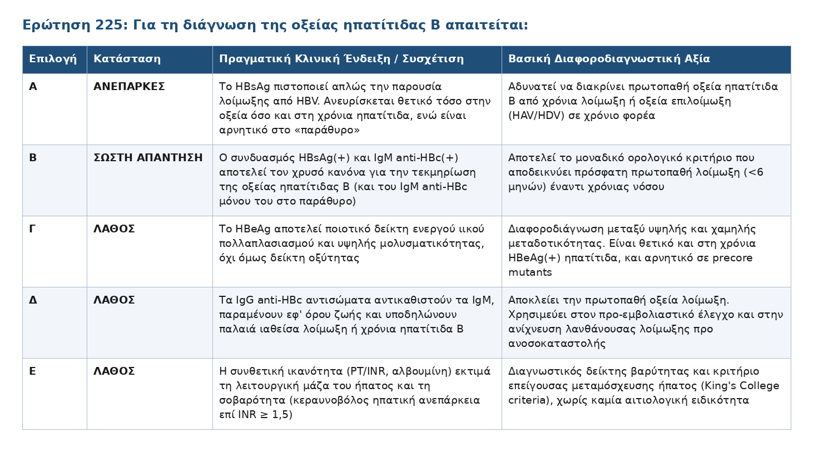
M4_Q225_TAB_03.png
Θέμα 226 (Seq 9)
Σύνολο εικόνων/πινάκων: 3
Όλες οι παρακάτω είναι εκδηλώσεις της σαρκοείδωσης, εκτός από:
📋 ΠΙΝΑΚΑΣ / ΣΧΗΜΑ (M4_Q226_TAB_01.png)
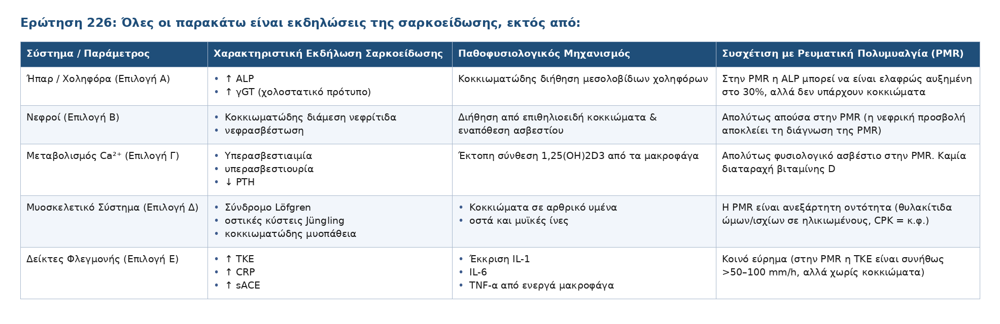
M4_Q226_TAB_01.png
📋 ΠΙΝΑΚΑΣ / ΣΧΗΜΑ (M4_Q226_TAB_02.png)

M4_Q226_TAB_02.png
📋 ΠΙΝΑΚΑΣ / ΣΧΗΜΑ (M4_Q226_TAB_03.png)

M4_Q226_TAB_03.png
Θέμα 227 (Seq 10)
Σύνολο εικόνων/πινάκων: 3
Όλες οι παρακάτω είναι ανεπιθύμητες ενέργειες της αμιοδαρόνης, εκτός από:
📋 ΠΙΝΑΚΑΣ / ΣΧΗΜΑ (M4_Q227_TAB_01.png)

M4_Q227_TAB_01.png
📋 ΠΙΝΑΚΑΣ / ΣΧΗΜΑ (M4_Q227_TAB_02.png)
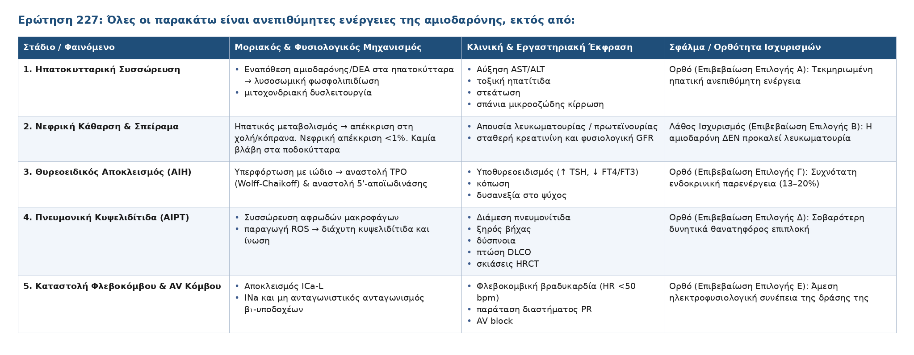
M4_Q227_TAB_02.png
📋 ΠΙΝΑΚΑΣ / ΣΧΗΜΑ (M4_Q227_TAB_03.png)

M4_Q227_TAB_03.png
Θέμα 228 (Seq 11)
Σύνολο εικόνων/πινάκων: 3
Σε ασθενείς με οξεία υπερασβεστιαιμία απαιτούνται όλα τα παρακάτω, εκτός από:
📋 ΠΙΝΑΚΑΣ / ΣΧΗΜΑ (M4_Q228_TAB_01.png)

M4_Q228_TAB_01.png
📋 ΠΙΝΑΚΑΣ / ΣΧΗΜΑ (M4_Q228_TAB_02.png)
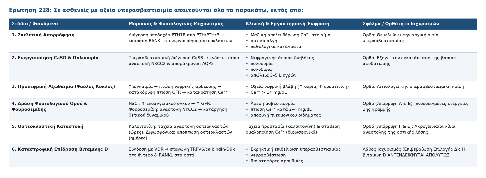
M4_Q228_TAB_02.png
📋 ΠΙΝΑΚΑΣ / ΣΧΗΜΑ (M4_Q228_TAB_03.png)
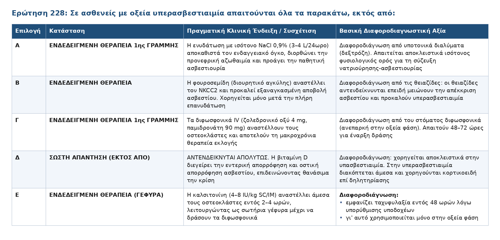
M4_Q228_TAB_03.png
Θέμα 229 (Seq 12)
Σύνολο εικόνων/πινάκων: 3
Όλα τα παρακάτω φάρμακα επηρεάζουν τα ηπατικά ένζυμα, εκτός από:
📋 ΠΙΝΑΚΑΣ / ΣΧΗΜΑ (M4_Q229_TAB_01.png)

M4_Q229_TAB_01.png
📋 ΠΙΝΑΚΑΣ / ΣΧΗΜΑ (M4_Q229_TAB_02.png)

M4_Q229_TAB_02.png
📋 ΠΙΝΑΚΑΣ / ΣΧΗΜΑ (M4_Q229_TAB_03.png)
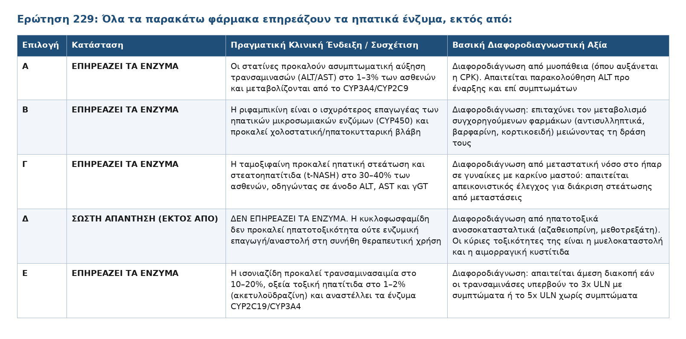
M4_Q229_TAB_03.png
Θέμα 230 (Seq 13)
Σύνολο εικόνων/πινάκων: 3
Όλες οι παρακάτω είναι ανεπιθύμητες ενέργειες της κυκλοφωσφαμίδης, εκτός από:
📋 ΠΙΝΑΚΑΣ / ΣΧΗΜΑ (M4_Q230_TAB_01.png)
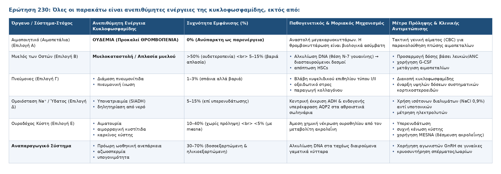
M4_Q230_TAB_01.png
📋 ΠΙΝΑΚΑΣ / ΣΧΗΜΑ (M4_Q230_TAB_02.png)
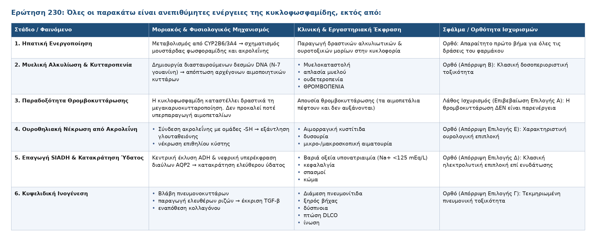
M4_Q230_TAB_02.png
📋 ΠΙΝΑΚΑΣ / ΣΧΗΜΑ (M4_Q230_TAB_03.png)

M4_Q230_TAB_03.png
Θέμα 231 (Seq 14)
Σύνολο εικόνων/πινάκων: 3
Όλα τα παρακάτω μικρόβια ενοχοποιούνται ως αίτια οξείας λοίμωξης των χοληφόρων, εκτός από:
📋 ΠΙΝΑΚΑΣ / ΣΧΗΜΑ (M4_Q231_TAB_01.png)
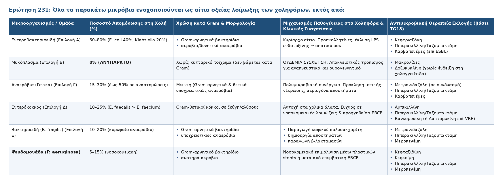
M4_Q231_TAB_01.png
📋 ΠΙΝΑΚΑΣ / ΣΧΗΜΑ (M4_Q231_TAB_02.png)

M4_Q231_TAB_02.png
📋 ΠΙΝΑΚΑΣ / ΣΧΗΜΑ (M4_Q231_TAB_03.png)

M4_Q231_TAB_03.png
Θέμα 232 (Seq 15)
Σύνολο εικόνων/πινάκων: 3
Γυναικομαστία είναι δυνατόν να παρατηρηθεί σε όλα τα παρακάτω, εκτός από:
📋 ΠΙΝΑΚΑΣ / ΣΧΗΜΑ (M4_Q232_TAB_01.png)
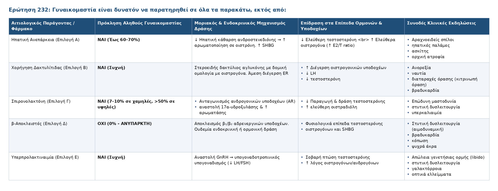
M4_Q232_TAB_01.png
📋 ΠΙΝΑΚΑΣ / ΣΧΗΜΑ (M4_Q232_TAB_02.png)

M4_Q232_TAB_02.png
📋 ΠΙΝΑΚΑΣ / ΣΧΗΜΑ (M4_Q232_TAB_03.png)

M4_Q232_TAB_03.png
Θέμα 233 (Seq 16)
Σύνολο εικόνων/πινάκων: 3
Φάρμακο εκλογής για τη θεραπεία παχύσαρκων ασθενών με σακχαρώδη διαβήτη τύπου ΙΙ είναι:
📋 ΠΙΝΑΚΑΣ / ΣΧΗΜΑ (M4_Q233_TAB_01.png)

M4_Q233_TAB_01.png
📋 ΠΙΝΑΚΑΣ / ΣΧΗΜΑ (M4_Q233_TAB_02.png)
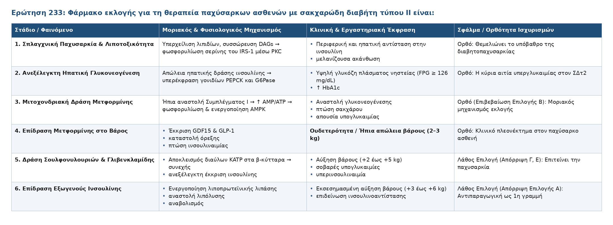
M4_Q233_TAB_02.png
📋 ΠΙΝΑΚΑΣ / ΣΧΗΜΑ (M4_Q233_TAB_03.png)
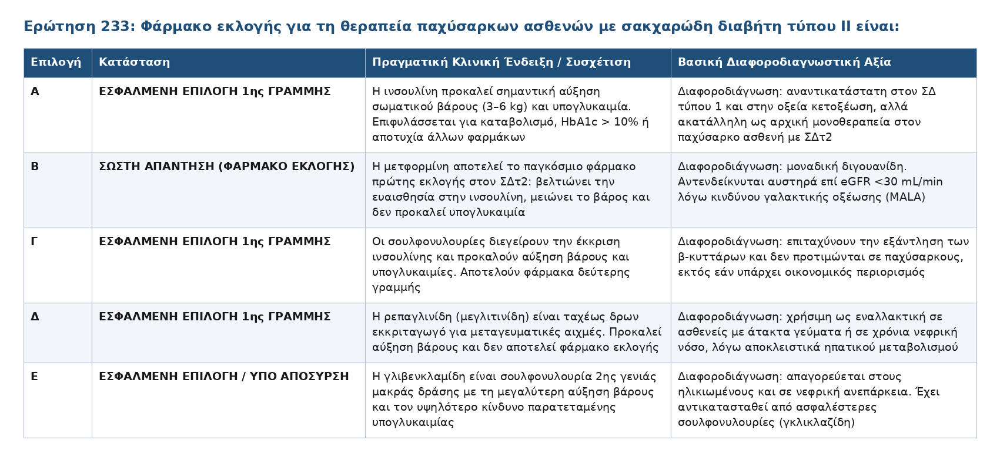
M4_Q233_TAB_03.png
Θέμα 234 (Seq 17)
Σύνολο εικόνων/πινάκων: 3
Τι ισχύει για τη διάγνωση του σακχαρώδη διαβήτη:
📋 ΠΙΝΑΚΑΣ / ΣΧΗΜΑ (M4_Q234_TAB_01.png)

M4_Q234_TAB_01.png
📋 ΠΙΝΑΚΑΣ / ΣΧΗΜΑ (M4_Q234_TAB_02.png)

M4_Q234_TAB_02.png
📋 ΠΙΝΑΚΑΣ / ΣΧΗΜΑ (M4_Q234_TAB_03.png)

M4_Q234_TAB_03.png
Θέμα 235 (Seq 18)
Σύνολο εικόνων/πινάκων: 3
Η οξεία σωληναριακή νέκρωση χαρακτηρίζεται από:
📋 ΠΙΝΑΚΑΣ / ΣΧΗΜΑ (M4_Q235_TAB_01.png)

M4_Q235_TAB_01.png
📋 ΠΙΝΑΚΑΣ / ΣΧΗΜΑ (M4_Q235_TAB_02.png)

M4_Q235_TAB_02.png
📋 ΠΙΝΑΚΑΣ / ΣΧΗΜΑ (M4_Q235_TAB_03.png)

M4_Q235_TAB_03.png
Θέμα 236 (Seq 19)
Σύνολο εικόνων/πινάκων: 3
Στην ελκώδη κολίτιδα σε αντίθεση με τη νόσο του Crohn:
📋 ΠΙΝΑΚΑΣ / ΣΧΗΜΑ (M4_Q236_TAB_01.png)
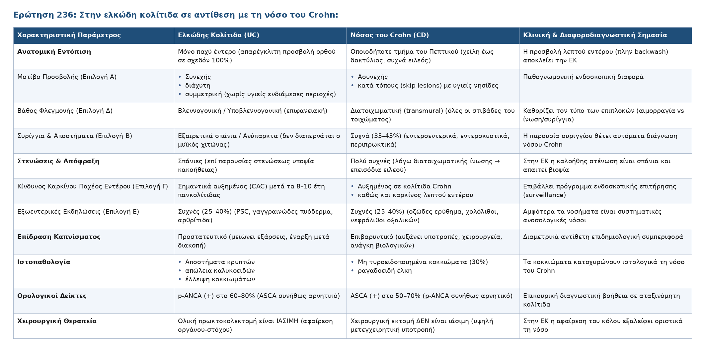
M4_Q236_TAB_01.png
📋 ΠΙΝΑΚΑΣ / ΣΧΗΜΑ (M4_Q236_TAB_02.png)
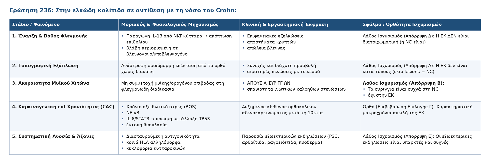
M4_Q236_TAB_02.png
📋 ΠΙΝΑΚΑΣ / ΣΧΗΜΑ (M4_Q236_TAB_03.png)

M4_Q236_TAB_03.png
Θέμα 237 (Seq 20)
Σύνολο εικόνων/πινάκων: 3
Ασθενής με αυξημένα χολοστατικά ένζυμα καθώς και υψηλά αντιμιτοχονδριακά αντισώματα πάσχει από:
📋 ΠΙΝΑΚΑΣ / ΣΧΗΜΑ (M4_Q237_TAB_01.png)

M4_Q237_TAB_01.png
📋 ΠΙΝΑΚΑΣ / ΣΧΗΜΑ (M4_Q237_TAB_02.png)

M4_Q237_TAB_02.png
📋 ΠΙΝΑΚΑΣ / ΣΧΗΜΑ (M4_Q237_TAB_03.png)
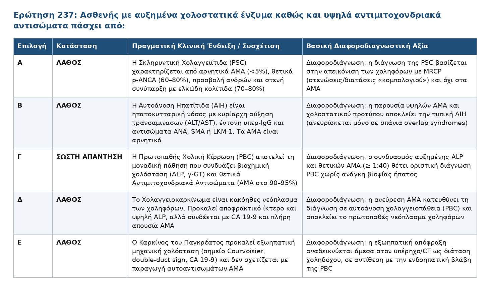
M4_Q237_TAB_03.png
Θέμα 238 (Seq 21)
Σύνολο εικόνων/πινάκων: 5
Φαινόμενο Raynaud παρατηρείται συχνότερα:
📷 ΚΛΙΝΙΚΗ ΕΙΚΟΝΑ / ΦΩΤΟΓΡΑΦΙΑ

ra_prognosis_factors_diagram.png
📊 ΠΛΗΡΟΦΟΡΙΑΚΟ ΔΙΑΓΡΑΜΜΑ
ra_prognosis_factors_diagram.png
📋 ΠΙΝΑΚΑΣ / ΣΧΗΜΑ (M4_Q238_TAB_01.png)
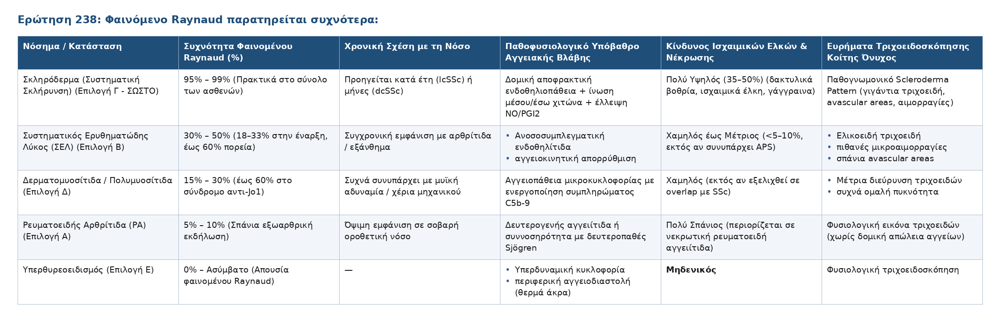
M4_Q238_TAB_01.png
📋 ΠΙΝΑΚΑΣ / ΣΧΗΜΑ (M4_Q238_TAB_02.png)

M4_Q238_TAB_02.png
📋 ΠΙΝΑΚΑΣ / ΣΧΗΜΑ (M4_Q238_TAB_03.png)

M4_Q238_TAB_03.png
Θέμα 239 (Seq 22)
Σύνολο εικόνων/πινάκων: 3
Το πιο συχνό και τυπικό σύμπτωμα της αγκυλοποιητικής σπονδυλίτιδας είναι:
📋 ΠΙΝΑΚΑΣ / ΣΧΗΜΑ (M4_Q239_TAB_01.png)

M4_Q239_TAB_01.png
📋 ΠΙΝΑΚΑΣ / ΣΧΗΜΑ (M4_Q239_TAB_02.png)
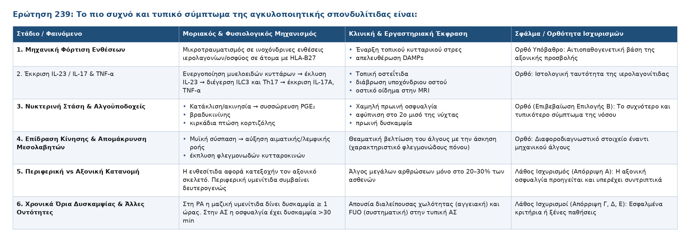
M4_Q239_TAB_02.png
📋 ΠΙΝΑΚΑΣ / ΣΧΗΜΑ (M4_Q239_TAB_03.png)
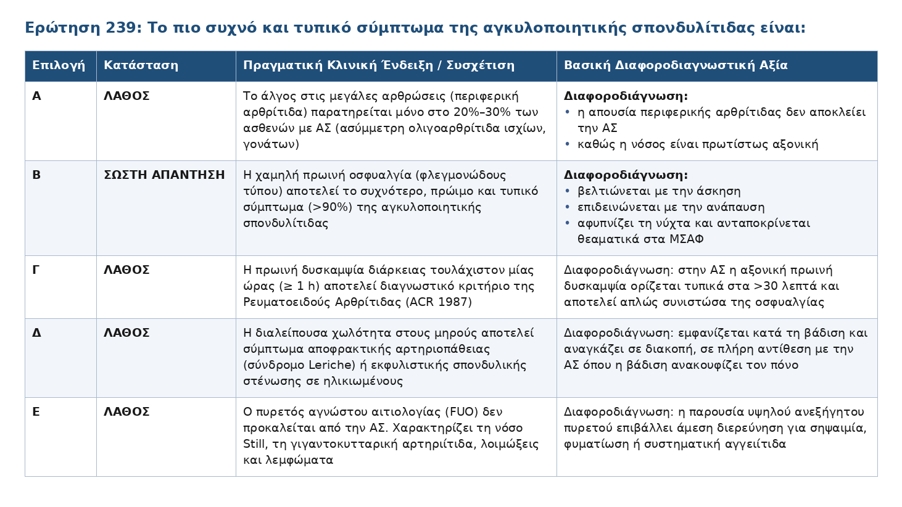
M4_Q239_TAB_03.png
Θέμα 240 (Seq 23)
Σύνολο εικόνων/πινάκων: 5
Η διάγνωση της οξείας ουρικής αρθρίτιδας τίθεται όταν υπάρχουν:
📷 ΚΛΙΝΙΚΗ ΕΙΚΟΝΑ / ΦΩΤΟΓΡΑΦΙΑ

synovial_fluid_analysis_diagram.png
📊 ΠΛΗΡΟΦΟΡΙΑΚΟ ΔΙΑΓΡΑΜΜΑ
synovial_fluid_analysis_diagram.png
📋 ΠΙΝΑΚΑΣ / ΣΧΗΜΑ (M4_Q240_TAB_01.png)
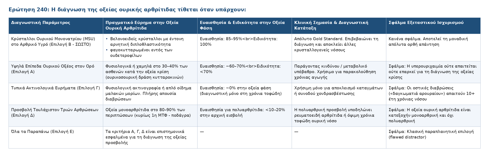
M4_Q240_TAB_01.png
📋 ΠΙΝΑΚΑΣ / ΣΧΗΜΑ (M4_Q240_TAB_02.png)

M4_Q240_TAB_02.png
📋 ΠΙΝΑΚΑΣ / ΣΧΗΜΑ (M4_Q240_TAB_03.png)
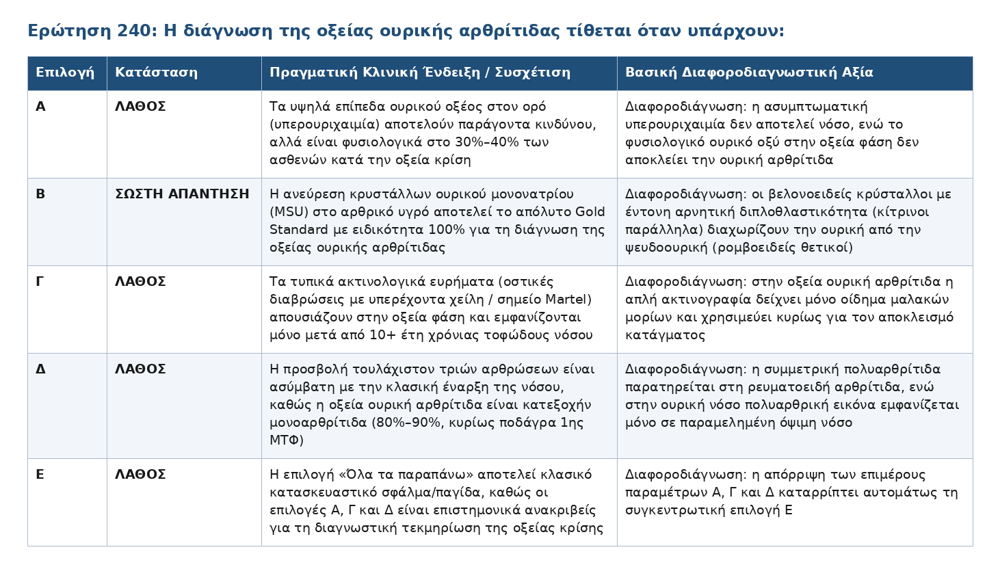
M4_Q240_TAB_03.png
Θέμα 241 (Seq 24)
Σύνολο εικόνων/πινάκων: 3
Ποιο από τα παρακάτω φάρμακα χρησιμοποιείται στη θεραπεία της λεϊσμανίασης:
📋 ΠΙΝΑΚΑΣ / ΣΧΗΜΑ (M4_Q241_TAB_01.png)

M4_Q241_TAB_01.png
📋 ΠΙΝΑΚΑΣ / ΣΧΗΜΑ (M4_Q241_TAB_02.png)
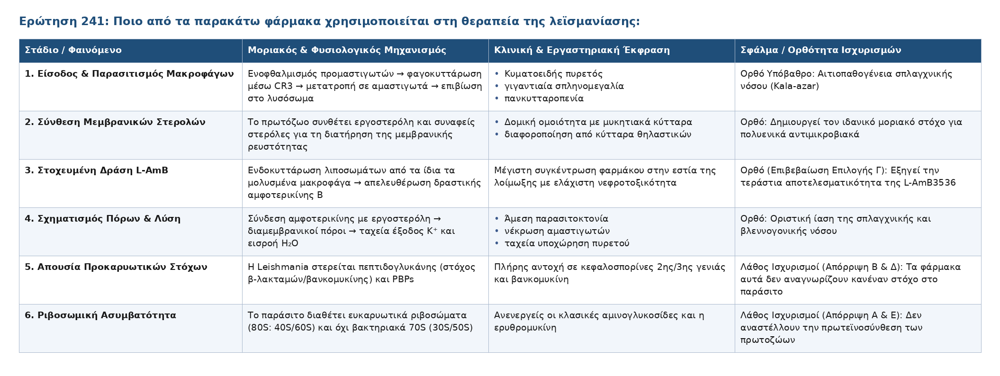
M4_Q241_TAB_02.png
📋 ΠΙΝΑΚΑΣ / ΣΧΗΜΑ (M4_Q241_TAB_03.png)

M4_Q241_TAB_03.png
Θέμα 242 (Seq 25)
Σύνολο εικόνων/πινάκων: 3
Στη μεγαλοβλαστική αναιμία ισχύουν όλα τα παρακάτω εκτός από:
📋 ΠΙΝΑΚΑΣ / ΣΧΗΜΑ (M4_Q242_TAB_01.png)
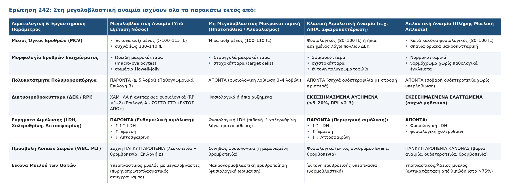
M4_Q242_TAB_01.png
📋 ΠΙΝΑΚΑΣ / ΣΧΗΜΑ (M4_Q242_TAB_02.png)
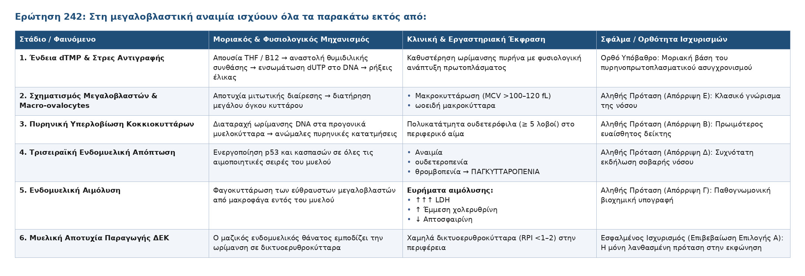
M4_Q242_TAB_02.png
📋 ΠΙΝΑΚΑΣ / ΣΧΗΜΑ (M4_Q242_TAB_03.png)

M4_Q242_TAB_03.png
Θέμα 243 (Seq 26)
Σύνολο εικόνων/πινάκων: 3
Η θεραπεία της υπερκαλιαιμίας μπορεί να περιλαμβάνει όλα τα παρακάτω, εκτός από:
📋 ΠΙΝΑΚΑΣ / ΣΧΗΜΑ (M4_Q243_TAB_01.png)

M4_Q243_TAB_01.png
📋 ΠΙΝΑΚΑΣ / ΣΧΗΜΑ (M4_Q243_TAB_02.png)

M4_Q243_TAB_02.png
📋 ΠΙΝΑΚΑΣ / ΣΧΗΜΑ (M4_Q243_TAB_03.png)

M4_Q243_TAB_03.png
Θέμα 244 (Seq 27)
Σύνολο εικόνων/πινάκων: 3
Ασθενής με θρομβοπενία και παράταση του χρόνου προθρομβίνης και μερικής θρομβοπλαστίνης μπορεί να πάσχει από:
📋 ΠΙΝΑΚΑΣ / ΣΧΗΜΑ (M4_Q244_TAB_01.png)
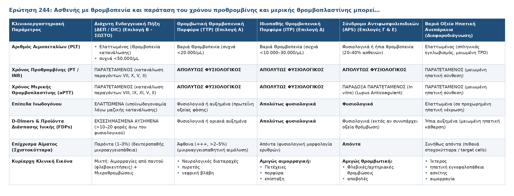
M4_Q244_TAB_01.png
📋 ΠΙΝΑΚΑΣ / ΣΧΗΜΑ (M4_Q244_TAB_02.png)
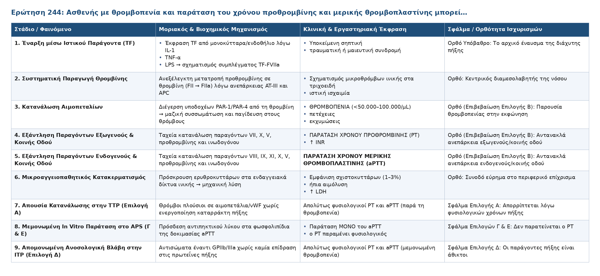
M4_Q244_TAB_02.png
📋 ΠΙΝΑΚΑΣ / ΣΧΗΜΑ (M4_Q244_TAB_03.png)

M4_Q244_TAB_03.png
Θέμα 245 (Seq 28)
Σύνολο εικόνων/πινάκων: 3
Όλα τα παρακάτω είναι σωστά για τη σαρκοείδωση, εκτός από:
📋 ΠΙΝΑΚΑΣ / ΣΧΗΜΑ (M4_Q245_TAB_01.png)
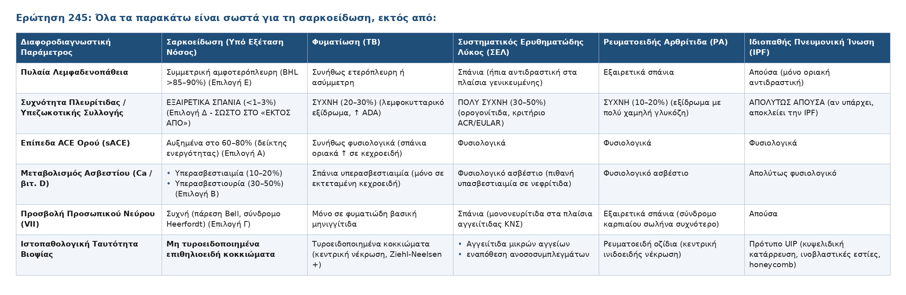
M4_Q245_TAB_01.png
📋 ΠΙΝΑΚΑΣ / ΣΧΗΜΑ (M4_Q245_TAB_02.png)

M4_Q245_TAB_02.png
📋 ΠΙΝΑΚΑΣ / ΣΧΗΜΑ (M4_Q245_TAB_03.png)

M4_Q245_TAB_03.png
Θέμα 246 (Seq 29)
Σύνολο εικόνων/πινάκων: 3
Η πιο συχνή ανεπιθύμητη ενέργεια της πυραζιναμίδης είναι:
📋 ΠΙΝΑΚΑΣ / ΣΧΗΜΑ (M4_Q246_TAB_01.png)

M4_Q246_TAB_01.png
📋 ΠΙΝΑΚΑΣ / ΣΧΗΜΑ (M4_Q246_TAB_02.png)

M4_Q246_TAB_02.png
📋 ΠΙΝΑΚΑΣ / ΣΧΗΜΑ (M4_Q246_TAB_03.png)
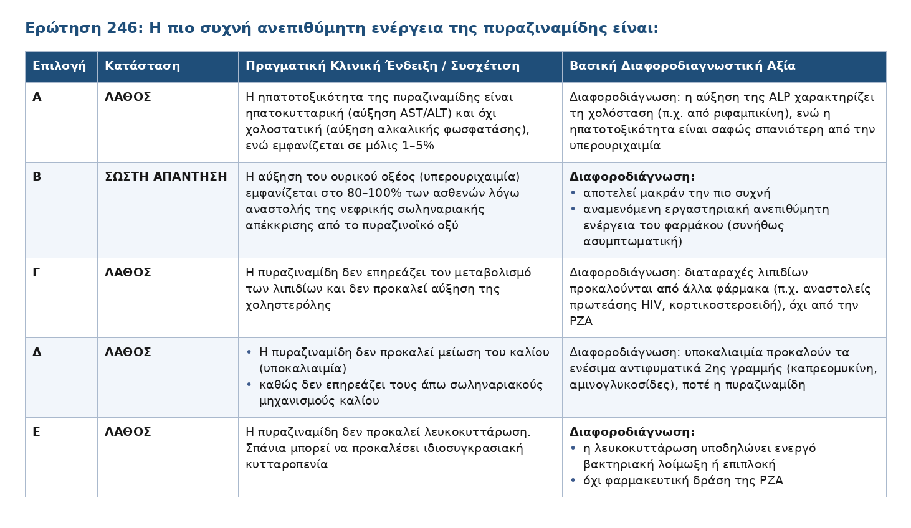
M4_Q246_TAB_03.png
Θέμα 247 (Seq 30)
Σύνολο εικόνων/πινάκων: 3
Οι στόχοι της αγωγής σε διαβητικούς είναι οι παρακάτω, εκτός από:
📋 ΠΙΝΑΚΑΣ / ΣΧΗΜΑ (M4_Q247_TAB_01.png)

M4_Q247_TAB_01.png
📋 ΠΙΝΑΚΑΣ / ΣΧΗΜΑ (M4_Q247_TAB_02.png)
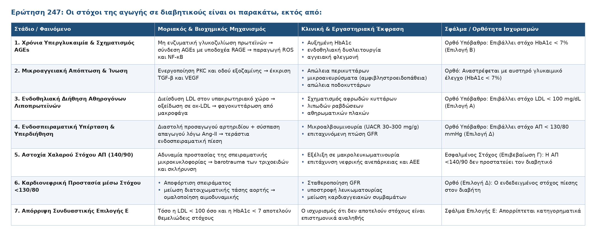
M4_Q247_TAB_02.png
📋 ΠΙΝΑΚΑΣ / ΣΧΗΜΑ (M4_Q247_TAB_03.png)
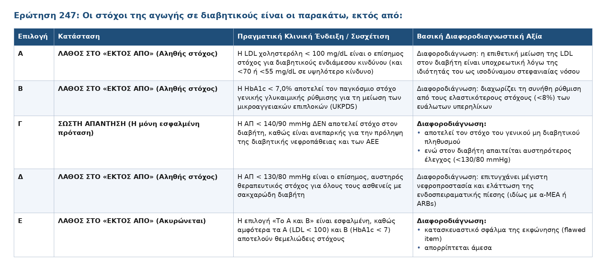
M4_Q247_TAB_03.png
Θέμα 248 (Seq 31)
Σύνολο εικόνων/πινάκων: 3
Όλες οι παρακάτω είναι ανεπιθύμητες ενέργειες των γλιταζονών, εκτός από:
📋 ΠΙΝΑΚΑΣ / ΣΧΗΜΑ (M4_Q248_TAB_01.png)
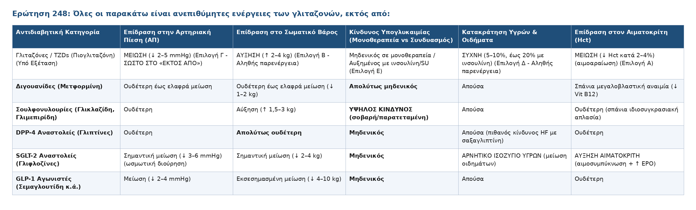
M4_Q248_TAB_01.png
📋 ΠΙΝΑΚΑΣ / ΣΧΗΜΑ (M4_Q248_TAB_02.png)
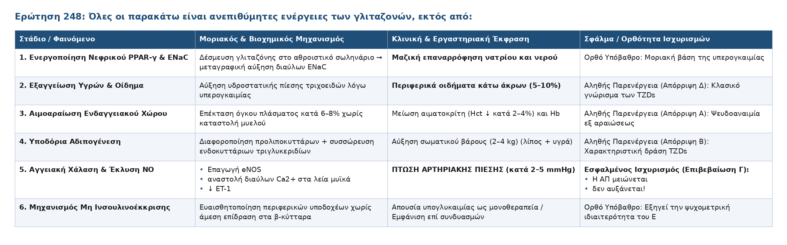
M4_Q248_TAB_02.png
📋 ΠΙΝΑΚΑΣ / ΣΧΗΜΑ (M4_Q248_TAB_03.png)

M4_Q248_TAB_03.png
Θέμα 249 (Seq 32)
Σύνολο εικόνων/πινάκων: 3
Απόλυτη αντένδειξη για τη χορήγηση θειαζιδικών διουρητικών είναι:
📋 ΠΙΝΑΚΑΣ / ΣΧΗΜΑ (M4_Q249_TAB_01.png)

M4_Q249_TAB_01.png
📋 ΠΙΝΑΚΑΣ / ΣΧΗΜΑ (M4_Q249_TAB_02.png)

M4_Q249_TAB_02.png
📋 ΠΙΝΑΚΑΣ / ΣΧΗΜΑ (M4_Q249_TAB_03.png)
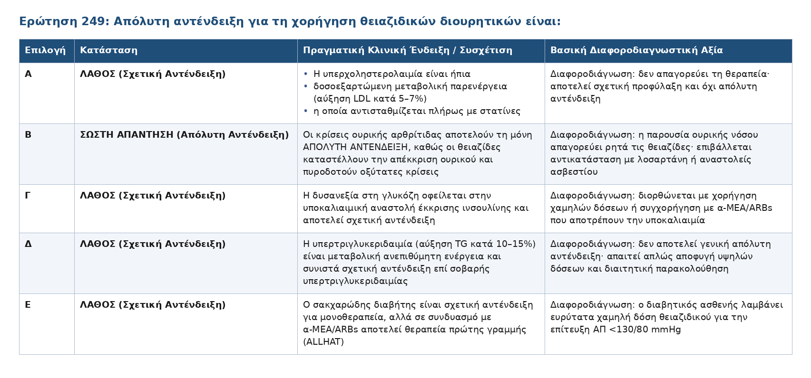
M4_Q249_TAB_03.png
Θέμα 250 (Seq 33)
Σύνολο εικόνων/πινάκων: 3
Φιμπράτες δεν πρέπει να χορηγηθούν:
📋 ΠΙΝΑΚΑΣ / ΣΧΗΜΑ (M4_Q250_TAB_01.png)
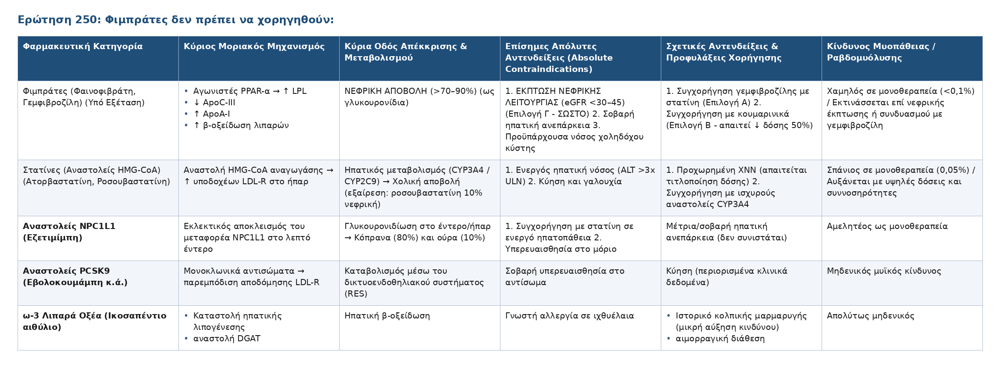
M4_Q250_TAB_01.png
📋 ΠΙΝΑΚΑΣ / ΣΧΗΜΑ (M4_Q250_TAB_02.png)
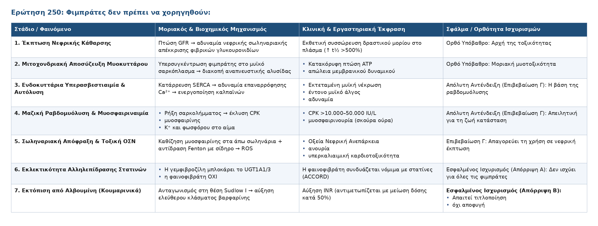
M4_Q250_TAB_02.png
📋 ΠΙΝΑΚΑΣ / ΣΧΗΜΑ (M4_Q250_TAB_03.png)

M4_Q250_TAB_03.png
Θέμα 251 (Seq 34)
Σύνολο εικόνων/πινάκων: 3
Όλα τα παρακάτω δυνατόν να προκαλέσουν οζώδες ερύθημα, εκτός από:
📋 ΠΙΝΑΚΑΣ / ΣΧΗΜΑ (M4_Q251_TAB_01.png)
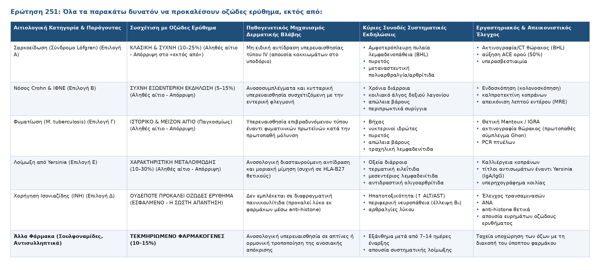
M4_Q251_TAB_01.png
📋 ΠΙΝΑΚΑΣ / ΣΧΗΜΑ (M4_Q251_TAB_02.png)
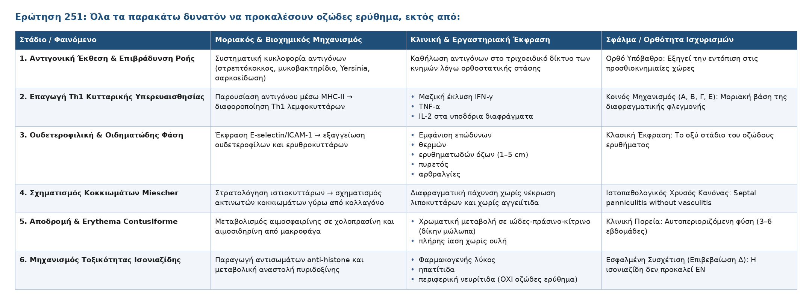
M4_Q251_TAB_02.png
📋 ΠΙΝΑΚΑΣ / ΣΧΗΜΑ (M4_Q251_TAB_03.png)

M4_Q251_TAB_03.png
Θέμα 251 (Seq 35)
Σύνολο εικόνων/πινάκων: 3
Όλα τα παρακάτω δυνατόν να προκαλέσουν οζώδες ερύθημα, εκτός από:
📋 ΠΙΝΑΚΑΣ / ΣΧΗΜΑ (M4_Q251B_TAB_01.png)
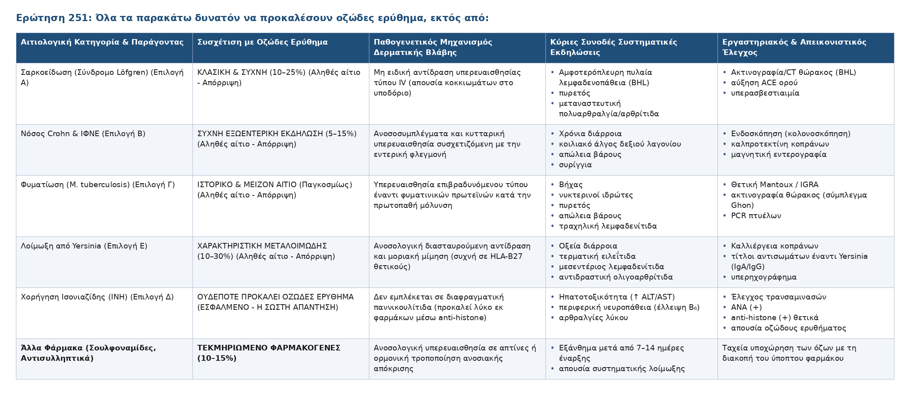
M4_Q251B_TAB_01.png
📋 ΠΙΝΑΚΑΣ / ΣΧΗΜΑ (M4_Q251B_TAB_02.png)
M4_Q251B_TAB_02.png
📋 ΠΙΝΑΚΑΣ / ΣΧΗΜΑ (M4_Q251B_TAB_03.png)

M4_Q251B_TAB_03.png
Θέμα 252 (Seq 36)
Σύνολο εικόνων/πινάκων: 3
Η πιο σημαντική επιπλοκή της βρουκέλλωσης είναι:
📋 ΠΙΝΑΚΑΣ / ΣΧΗΜΑ (M4_Q252_TAB_01.png)

M4_Q252_TAB_01.png
📋 ΠΙΝΑΚΑΣ / ΣΧΗΜΑ (M4_Q252_TAB_02.png)

M4_Q252_TAB_02.png
📋 ΠΙΝΑΚΑΣ / ΣΧΗΜΑ (M4_Q252_TAB_03.png)
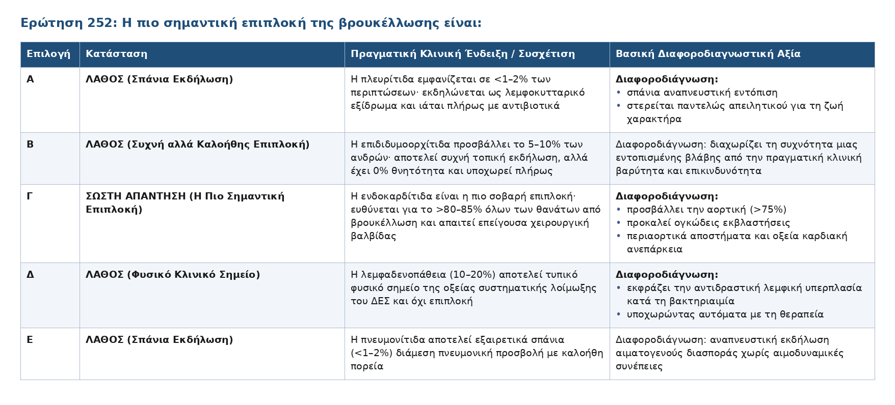
M4_Q252_TAB_03.png
Θέμα 253 (Seq 37)
Σύνολο εικόνων/πινάκων: 3
Γυναίκα 62 ετών με έντονο κνησμό και ολική χοληστερόλη 420mg/dl πιθανόν έχει:
📋 ΠΙΝΑΚΑΣ / ΣΧΗΜΑ (M4_Q253_TAB_01.png)
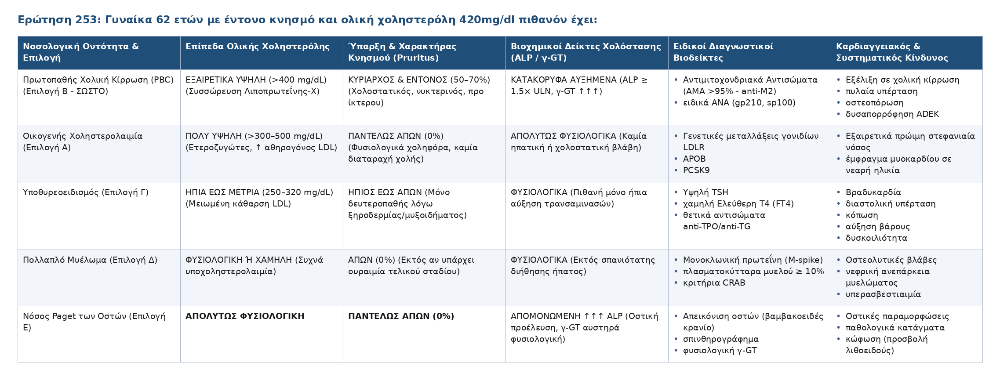
M4_Q253_TAB_01.png
📋 ΠΙΝΑΚΑΣ / ΣΧΗΜΑ (M4_Q253_TAB_02.png)
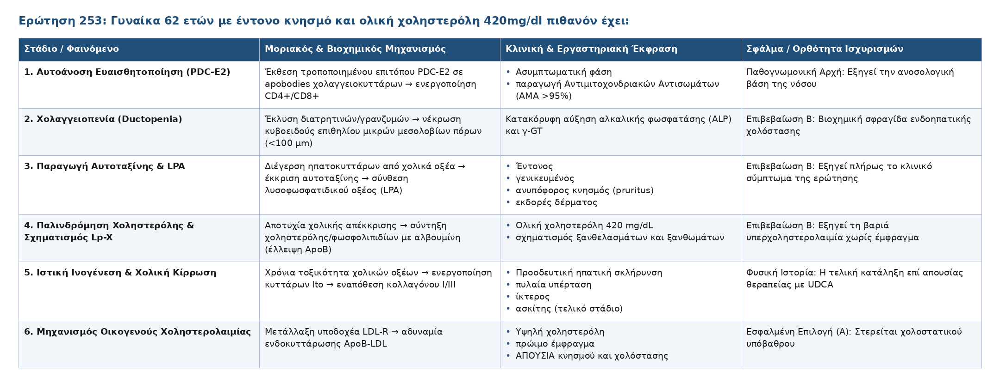
M4_Q253_TAB_02.png
📋 ΠΙΝΑΚΑΣ / ΣΧΗΜΑ (M4_Q253_TAB_03.png)
M4_Q253_TAB_03.png
Θέμα 254 (Seq 38)
Σύνολο εικόνων/πινάκων: 3
Ασθενής 70 ετών με οσφυαλγία, αναιμία και σύνδρομο Fanconi (γλυκοζουρία, ουρικοσουρία, φωσφατουρία), πιθανά έχει:
📋 ΠΙΝΑΚΑΣ / ΣΧΗΜΑ (M4_Q254_TAB_01.png)

M4_Q254_TAB_01.png
📋 ΠΙΝΑΚΑΣ / ΣΧΗΜΑ (M4_Q254_TAB_02.png)
M4_Q254_TAB_02.png
📋 ΠΙΝΑΚΑΣ / ΣΧΗΜΑ (M4_Q254_TAB_03.png)
M4_Q254_TAB_03.png
Θέμα 255 (Seq 39)
Σύνολο εικόνων/πινάκων: 3
Όλα τα παρακάτω προκαλούν υπερνατριαιμία, εκτός από:
📋 ΠΙΝΑΚΑΣ / ΣΧΗΜΑ (M4_Q255_TAB_01.png)
M4_Q255_TAB_01.png
📋 ΠΙΝΑΚΑΣ / ΣΧΗΜΑ (M4_Q255_TAB_02.png)
M4_Q255_TAB_02.png
📋 ΠΙΝΑΚΑΣ / ΣΧΗΜΑ (M4_Q255_TAB_03.png)

M4_Q255_TAB_03.png
Θέμα 256 (Seq 40)
Σύνολο εικόνων/πινάκων: 3
Ασθενής με λεύκη και υποθυρεοειδισμό εμφανίζει κόπωση σε συνδυασμό με υπόταση (ΑΠ 90/60mmhg) και αυξημένες τρανσαμινάσες. Η πιο πιθανή διάγνωση είναι:
📋 ΠΙΝΑΚΑΣ / ΣΧΗΜΑ (M4_Q256_TAB_01.png)

M4_Q256_TAB_01.png
📋 ΠΙΝΑΚΑΣ / ΣΧΗΜΑ (M4_Q256_TAB_02.png)

M4_Q256_TAB_02.png
📋 ΠΙΝΑΚΑΣ / ΣΧΗΜΑ (M4_Q256_TAB_03.png)
M4_Q256_TAB_03.png
Θέμα 257 (Seq 41)
Σύνολο εικόνων/πινάκων: 3
Σε οξεία κρίση ουρικής αρθρίτιδας δεν πρέπει να χορηγηθεί:
📋 ΠΙΝΑΚΑΣ / ΣΧΗΜΑ (M4_Q257_TAB_01.png)
M4_Q257_TAB_01.png
📋 ΠΙΝΑΚΑΣ / ΣΧΗΜΑ (M4_Q257_TAB_02.png)
M4_Q257_TAB_02.png
📋 ΠΙΝΑΚΑΣ / ΣΧΗΜΑ (M4_Q257_TAB_03.png)

M4_Q257_TAB_03.png
Θέμα 258 (Seq 42)
Σύνολο εικόνων/πινάκων: 3
Ποιος συνδυασμός αντιυπερτασικών φαρμάκων πρέπει να αποφεύγεται:
📋 ΠΙΝΑΚΑΣ / ΣΧΗΜΑ (M4_Q258_TAB_01.png)
M4_Q258_TAB_01.png
📋 ΠΙΝΑΚΑΣ / ΣΧΗΜΑ (M4_Q258_TAB_02.png)
M4_Q258_TAB_02.png
📋 ΠΙΝΑΚΑΣ / ΣΧΗΜΑ (M4_Q258_TAB_03.png)
M4_Q258_TAB_03.png
Θέμα 259 (Seq 43)
Σύνολο εικόνων/πινάκων: 5
Σε ασθενείς με υποθυρεοειδισμό παρατηρούνται όλα τα παρακάτω, εκτός από:
📷 ΚΛΙΝΙΚΗ ΕΙΚΟΝΑ / ΦΩΤΟΓΡΑΦΙΑ
hypothyroidism_clinical_features_q259_diagram.png
📊 ΠΛΗΡΟΦΟΡΙΑΚΟ ΔΙΑΓΡΑΜΜΑ
hypothyroidism_clinical_features_q259_diagram.png
📋 ΠΙΝΑΚΑΣ / ΣΧΗΜΑ (M4_Q259_TAB_01.png)
M4_Q259_TAB_01.png
📋 ΠΙΝΑΚΑΣ / ΣΧΗΜΑ (M4_Q259_TAB_02.png)

M4_Q259_TAB_02.png
📋 ΠΙΝΑΚΑΣ / ΣΧΗΜΑ (M4_Q259_TAB_03.png)
M4_Q259_TAB_03.png
Θέμα 260 (Seq 44)
Σύνολο εικόνων/πινάκων: 5
Στην πνευμονική πύκνωση:
📷 ΚΛΙΝΙΚΗ ΕΙΚΟΝΑ / ΦΩΤΟΓΡΑΦΙΑ

pulmonary_consolidation_q260_diagram.png
📊 ΠΛΗΡΟΦΟΡΙΑΚΟ ΔΙΑΓΡΑΜΜΑ
pulmonary_consolidation_q260_diagram.png
📋 ΠΙΝΑΚΑΣ / ΣΧΗΜΑ (M4_Q260_TAB_01.png)
M4_Q260_TAB_01.png
📋 ΠΙΝΑΚΑΣ / ΣΧΗΜΑ (M4_Q260_TAB_02.png)
M4_Q260_TAB_02.png
📋 ΠΙΝΑΚΑΣ / ΣΧΗΜΑ (M4_Q260_TAB_03.png)

M4_Q260_TAB_03.png
Θέμα 261 (Seq 45)
Σύνολο εικόνων/πινάκων: 5
Υγροί ρόγχοι τρίζοντες και υποτρίζοντες είναι ακουστοί:
📷 ΚΛΙΝΙΚΗ ΕΙΚΟΝΑ / ΦΩΤΟΓΡΑΦΙΑ

left_heart_failure_crackles_q261_diagram.png
📊 ΠΛΗΡΟΦΟΡΙΑΚΟ ΔΙΑΓΡΑΜΜΑ
left_heart_failure_crackles_q261_diagram.png
📋 ΠΙΝΑΚΑΣ / ΣΧΗΜΑ (M4_Q261_TAB_01.png)

M4_Q261_TAB_01.png
📋 ΠΙΝΑΚΑΣ / ΣΧΗΜΑ (M4_Q261_TAB_02.png)
M4_Q261_TAB_02.png
📋 ΠΙΝΑΚΑΣ / ΣΧΗΜΑ (M4_Q261_TAB_03.png)
M4_Q261_TAB_03.png
Θέμα 262 (Seq 46)
Σύνολο εικόνων/πινάκων: 5
Στον πνευμοθώρακα:
📷 ΚΛΙΝΙΚΗ ΕΙΚΟΝΑ / ΦΩΤΟΓΡΑΦΙΑ
pneumothorax_clinical_features_q262_diagram.png
📊 ΠΛΗΡΟΦΟΡΙΑΚΟ ΔΙΑΓΡΑΜΜΑ
pneumothorax_clinical_features_q262_diagram.png
📋 ΠΙΝΑΚΑΣ / ΣΧΗΜΑ (M4_Q262_TAB_01.png)
M4_Q262_TAB_01.png
📋 ΠΙΝΑΚΑΣ / ΣΧΗΜΑ (M4_Q262_TAB_02.png)

M4_Q262_TAB_02.png
📋 ΠΙΝΑΚΑΣ / ΣΧΗΜΑ (M4_Q262_TAB_03.png)

M4_Q262_TAB_03.png
Θέμα 263 (Seq 47)
Σύνολο εικόνων/πινάκων: 5
Η εστία ακροάσεως της αορτικής βαλβίδας ανευρίσκεται:
📷 ΚΛΙΝΙΚΗ ΕΙΚΟΝΑ / ΦΩΤΟΓΡΑΦΙΑ

cardiac_auscultation_areas_q263_diagram.png
📊 ΠΛΗΡΟΦΟΡΙΑΚΟ ΔΙΑΓΡΑΜΜΑ
cardiac_auscultation_areas_q263_diagram.png
📋 ΠΙΝΑΚΑΣ / ΣΧΗΜΑ (M4_Q263_TAB_01.png)
M4_Q263_TAB_01.png
📋 ΠΙΝΑΚΑΣ / ΣΧΗΜΑ (M4_Q263_TAB_02.png)
M4_Q263_TAB_02.png
📋 ΠΙΝΑΚΑΣ / ΣΧΗΜΑ (M4_Q263_TAB_03.png)
M4_Q263_TAB_03.png
Θέμα 264 (Seq 48)
Σύνολο εικόνων/πινάκων: 3
Στη στένωση αορτικής βαλβίδας υπάρχει:
📋 ΠΙΝΑΚΑΣ / ΣΧΗΜΑ (M4_Q264_TAB_01.png)
M4_Q264_TAB_01.png
📋 ΠΙΝΑΚΑΣ / ΣΧΗΜΑ (M4_Q264_TAB_02.png)
M4_Q264_TAB_02.png
📋 ΠΙΝΑΚΑΣ / ΣΧΗΜΑ (M4_Q264_TAB_03.png)

M4_Q264_TAB_03.png
Θέμα 265 (Seq 49)
Σύνολο εικόνων/πινάκων: 5
Στη στένωση μιτροειδούς υπάρχει:
📷 ΚΛΙΝΙΚΗ ΕΙΚΟΝΑ / ΦΩΤΟΓΡΑΦΙΑ

mitral_stenosis_murmur_q265_diagram.png
📊 ΠΛΗΡΟΦΟΡΙΑΚΟ ΔΙΑΓΡΑΜΜΑ
mitral_stenosis_murmur_q265_diagram.png
📋 ΠΙΝΑΚΑΣ / ΣΧΗΜΑ (M4_Q265_TAB_01.png)

M4_Q265_TAB_01.png
📋 ΠΙΝΑΚΑΣ / ΣΧΗΜΑ (M4_Q265_TAB_02.png)

M4_Q265_TAB_02.png
📋 ΠΙΝΑΚΑΣ / ΣΧΗΜΑ (M4_Q265_TAB_03.png)

M4_Q265_TAB_03.png
Θέμα 266 (Seq 50)
Σύνολο εικόνων/πινάκων: 5
Στη θρομβωτική θρομβοπενική πορφύρα (TTP) είναι δυνατό να υπάρχουν όλα τα παρακάτω, εκτός από:
📷 ΚΛΙΝΙΚΗ ΕΙΚΟΝΑ / ΦΩΤΟΓΡΑΦΙΑ

ttp_pathophysiology_q266_diagram.png
📊 ΠΛΗΡΟΦΟΡΙΑΚΟ ΔΙΑΓΡΑΜΜΑ
ttp_pathophysiology_q266_diagram.png
📋 ΠΙΝΑΚΑΣ / ΣΧΗΜΑ (M4_Q266_TAB_01.png)

M4_Q266_TAB_01.png
📋 ΠΙΝΑΚΑΣ / ΣΧΗΜΑ (M4_Q266_TAB_02.png)
M4_Q266_TAB_02.png
📋 ΠΙΝΑΚΑΣ / ΣΧΗΜΑ (M4_Q266_TAB_03.png)

M4_Q266_TAB_03.png
Θέμα 267 (Seq 51)
Σύνολο εικόνων/πινάκων: 5
Στη διάχυτη ενδαγγειακή πήξη υπάρχουν:
📷 ΚΛΙΝΙΚΗ ΕΙΚΟΝΑ / ΦΩΤΟΓΡΑΦΙΑ

dic_pathophysiology_q267_diagram.png
📊 ΠΛΗΡΟΦΟΡΙΑΚΟ ΔΙΑΓΡΑΜΜΑ
dic_pathophysiology_q267_diagram.png
📋 ΠΙΝΑΚΑΣ / ΣΧΗΜΑ (M4_Q267_TAB_01.png)
M4_Q267_TAB_01.png
📋 ΠΙΝΑΚΑΣ / ΣΧΗΜΑ (M4_Q267_TAB_02.png)
M4_Q267_TAB_02.png
📋 ΠΙΝΑΚΑΣ / ΣΧΗΜΑ (M4_Q267_TAB_03.png)

M4_Q267_TAB_03.png
Θέμα 268 (Seq 52)
Σύνολο εικόνων/πινάκων: 5
Κληρονομική θρομβοφιλική διάθεση πρέπει να αναζητηθεί:
📷 ΚΛΙΝΙΚΗ ΕΙΚΟΝΑ / ΦΩΤΟΓΡΑΦΙΑ
thrombophilia_q268_5options_diagram.png
📊 ΠΛΗΡΟΦΟΡΙΑΚΟ ΔΙΑΓΡΑΜΜΑ

thrombophilia_screening_q268_diagram.png
📋 ΠΙΝΑΚΑΣ / ΣΧΗΜΑ (M4_Q268_TAB_01.png)

M4_Q268_TAB_01.png
📋 ΠΙΝΑΚΑΣ / ΣΧΗΜΑ (M4_Q268_TAB_02.png)

M4_Q268_TAB_02.png
📋 ΠΙΝΑΚΑΣ / ΣΧΗΜΑ (M4_Q268_TAB_03.png)

M4_Q268_TAB_03.png
Θέμα 269 (Seq 53)
Σύνολο εικόνων/πινάκων: 5
Ποιο από τα παρακάτω είναι σωστό για την αληθή πολυκυτταραιμία:
📷 ΚΛΙΝΙΚΗ ΕΙΚΟΝΑ / ΦΩΤΟΓΡΑΦΙΑ
pv_pathophysiology_q269_diagram.png
📊 ΠΛΗΡΟΦΟΡΙΑΚΟ ΔΙΑΓΡΑΜΜΑ
pv_pathophysiology_q269_diagram.png
📋 ΠΙΝΑΚΑΣ / ΣΧΗΜΑ (M4_Q269_TAB_01.png)

M4_Q269_TAB_01.png
📋 ΠΙΝΑΚΑΣ / ΣΧΗΜΑ (M4_Q269_TAB_02.png)

M4_Q269_TAB_02.png
📋 ΠΙΝΑΚΑΣ / ΣΧΗΜΑ (M4_Q269_TAB_03.png)

M4_Q269_TAB_03.png
Θέμα 270 (Seq 54)
Σύνολο εικόνων/πινάκων: 5
Στην ένδεια βιταμίνης Β12 υπάρχουν όλα τα παρακάτω εκτός από:
📷 ΚΛΙΝΙΚΗ ΕΙΚΟΝΑ / ΦΩΤΟΓΡΑΦΙΑ
b12_deficiency_q270_diagram.png
📊 ΠΛΗΡΟΦΟΡΙΑΚΟ ΔΙΑΓΡΑΜΜΑ
b12_deficiency_q270_diagram.png
📋 ΠΙΝΑΚΑΣ / ΣΧΗΜΑ (M4_Q270_TAB_01.png)

M4_Q270_TAB_01.png
📋 ΠΙΝΑΚΑΣ / ΣΧΗΜΑ (M4_Q270_TAB_02.png)

M4_Q270_TAB_02.png
📋 ΠΙΝΑΚΑΣ / ΣΧΗΜΑ (M4_Q270_TAB_03.png)

M4_Q270_TAB_03.png
Θέμα 271 (Seq 55)
Σύνολο εικόνων/πινάκων: 5
Ποιο από τα παρακάτω δεν ισχύει για την οξεία κρίση ουρικής αρθρίτιδας:
📷 ΚΛΙΝΙΚΗ ΕΙΚΟΝΑ / ΦΩΤΟΓΡΑΦΙΑ

gout_q271_diagram.png
📊 ΠΛΗΡΟΦΟΡΙΑΚΟ ΔΙΑΓΡΑΜΜΑ
gout_pathophysiology_diagram.png
📋 ΠΙΝΑΚΑΣ / ΣΧΗΜΑ (M4_Q271_TAB_01.png)

M4_Q271_TAB_01.png
📋 ΠΙΝΑΚΑΣ / ΣΧΗΜΑ (M4_Q271_TAB_02.png)

M4_Q271_TAB_02.png
📋 ΠΙΝΑΚΑΣ / ΣΧΗΜΑ (M4_Q271_TAB_03.png)

M4_Q271_TAB_03.png
Θέμα 272 (Seq 56)
Σύνολο εικόνων/πινάκων: 5
Στην αγκυλοποιητική σπονδυλίτιδα μπορεί να υπάρχουν όλα τα παρακάτω, εκτός από:
📷 ΚΛΙΝΙΚΗ ΕΙΚΟΝΑ / ΦΩΤΟΓΡΑΦΙΑ

ankylosing_spondylitis_q272_diagram.png
📊 ΠΛΗΡΟΦΟΡΙΑΚΟ ΔΙΑΓΡΑΜΜΑ
ankylosing_spondylitis_q272_diagram.png
📋 ΠΙΝΑΚΑΣ / ΣΧΗΜΑ (M4_Q272_TAB_01.png)

M4_Q272_TAB_01.png
📋 ΠΙΝΑΚΑΣ / ΣΧΗΜΑ (M4_Q272_TAB_02.png)

M4_Q272_TAB_02.png
📋 ΠΙΝΑΚΑΣ / ΣΧΗΜΑ (M4_Q272_TAB_03.png)
M4_Q272_TAB_03.png
Θέμα 273 (Seq 57)
Σύνολο εικόνων/πινάκων: 5
Στην κροταφική αρθρίτιδα δυνατό να υπάρχουν όλα τα παρακάτω εκτός από ένα:
📷 ΚΛΙΝΙΚΗ ΕΙΚΟΝΑ / ΦΩΤΟΓΡΑΦΙΑ
temporal_arteritis_q273_diagram.png
📊 ΠΛΗΡΟΦΟΡΙΑΚΟ ΔΙΑΓΡΑΜΜΑ
temporal_arteritis_q273_diagram.png
📋 ΠΙΝΑΚΑΣ / ΣΧΗΜΑ (M4_Q273_TAB_01.png)

M4_Q273_TAB_01.png
📋 ΠΙΝΑΚΑΣ / ΣΧΗΜΑ (M4_Q273_TAB_02.png)
M4_Q273_TAB_02.png
📋 ΠΙΝΑΚΑΣ / ΣΧΗΜΑ (M4_Q273_TAB_03.png)
M4_Q273_TAB_03.png
Θέμα 274 (Seq 58)
Σύνολο εικόνων/πινάκων: 5
Στο συστηματικό σκληρόδερμα υπάρχει:
📷 ΚΛΙΝΙΚΗ ΕΙΚΟΝΑ / ΦΩΤΟΓΡΑΦΙΑ

systemic_sclerosis_q274_diagram.png
📊 ΠΛΗΡΟΦΟΡΙΑΚΟ ΔΙΑΓΡΑΜΜΑ
systemic_sclerosis_q274_diagram.png
📋 ΠΙΝΑΚΑΣ / ΣΧΗΜΑ (M4_Q274_TAB_01.png)
M4_Q274_TAB_01.png
📋 ΠΙΝΑΚΑΣ / ΣΧΗΜΑ (M4_Q274_TAB_02.png)
M4_Q274_TAB_02.png
📋 ΠΙΝΑΚΑΣ / ΣΧΗΜΑ (M4_Q274_TAB_03.png)
M4_Q274_TAB_03.png
Θέμα 275 (Seq 59)
Σύνολο εικόνων/πινάκων: 5
Στη διάγνωση του ΣΕΛ συμβάλλουν όλα τα παρακάτω, εκτός από:
📷 ΚΛΙΝΙΚΗ ΕΙΚΟΝΑ / ΦΩΤΟΓΡΑΦΙΑ
sle_diagnosis_crp_q275_diagram.png
📊 ΠΛΗΡΟΦΟΡΙΑΚΟ ΔΙΑΓΡΑΜΜΑ
sle_diagnosis_crp_q275_diagram.png
📋 ΠΙΝΑΚΑΣ / ΣΧΗΜΑ (M4_Q275_TAB_01.png)
M4_Q275_TAB_01.png
📋 ΠΙΝΑΚΑΣ / ΣΧΗΜΑ (M4_Q275_TAB_02.png)

M4_Q275_TAB_02.png
📋 ΠΙΝΑΚΑΣ / ΣΧΗΜΑ (M4_Q275_TAB_03.png)
M4_Q275_TAB_03.png
Θέμα 276 (Seq 60)
Σύνολο εικόνων/πινάκων: 5
Ένα από τα παρακάτω δεν ισχύει για τις συστηματικές αγγειίτιδες:
📷 ΚΛΙΝΙΚΗ ΕΙΚΟΝΑ / ΦΩΤΟΓΡΑΦΙΑ

vasculitis_pancytopenia_q276_diagram.png
📊 ΠΛΗΡΟΦΟΡΙΑΚΟ ΔΙΑΓΡΑΜΜΑ
vasculitis_pancytopenia_q276_diagram.png
📋 ΠΙΝΑΚΑΣ / ΣΧΗΜΑ (M4_Q276_TAB_01.png)

M4_Q276_TAB_01.png
📋 ΠΙΝΑΚΑΣ / ΣΧΗΜΑ (M4_Q276_TAB_02.png)

M4_Q276_TAB_02.png
📋 ΠΙΝΑΚΑΣ / ΣΧΗΜΑ (M4_Q276_TAB_03.png)
M4_Q276_TAB_03.png
Θέμα 277 (Seq 61)
Σύνολο εικόνων/πινάκων: 5
Στο φαιοχρωμοκύττωμα υπάρχει:
📷 ΚΛΙΝΙΚΗ ΕΙΚΟΝΑ / ΦΩΤΟΓΡΑΦΙΑ
pheochromocytoma_q277_diagram.png
📊 ΠΛΗΡΟΦΟΡΙΑΚΟ ΔΙΑΓΡΑΜΜΑ
pheochromocytoma_q277_diagram.png
📋 ΠΙΝΑΚΑΣ / ΣΧΗΜΑ (M4_Q277_TAB_01.png)
M4_Q277_TAB_01.png
📋 ΠΙΝΑΚΑΣ / ΣΧΗΜΑ (M4_Q277_TAB_02.png)

M4_Q277_TAB_02.png
📋 ΠΙΝΑΚΑΣ / ΣΧΗΜΑ (M4_Q277_TAB_03.png)

M4_Q277_TAB_03.png
Θέμα 278 (Seq 62)
Σύνολο εικόνων/πινάκων: 5
Στον υπερθυρεοειδισμό παρατηρούνται όλα τα παρακάτω εκτός από:
📷 ΚΛΙΝΙΚΗ ΕΙΚΟΝΑ / ΦΩΤΟΓΡΑΦΙΑ
hyperthyroidism_bradycardia_q278_diagram.png
📊 ΠΛΗΡΟΦΟΡΙΑΚΟ ΔΙΑΓΡΑΜΜΑ
hyperthyroidism_bradycardia_q278_diagram.png
📋 ΠΙΝΑΚΑΣ / ΣΧΗΜΑ (M4_Q278_TAB_01.png)

M4_Q278_TAB_01.png
📋 ΠΙΝΑΚΑΣ / ΣΧΗΜΑ (M4_Q278_TAB_02.png)
M4_Q278_TAB_02.png
📋 ΠΙΝΑΚΑΣ / ΣΧΗΜΑ (M4_Q278_TAB_03.png)

M4_Q278_TAB_03.png
Θέμα 279 (Seq 63)
Σύνολο εικόνων/πινάκων: 5
Η νόσος του Addison χαρακτηρίζεται από:
📷 ΚΛΙΝΙΚΗ ΕΙΚΟΝΑ / ΦΩΤΟΓΡΑΦΙΑ

addison_hyperkalemia_q279_diagram.png
📊 ΠΛΗΡΟΦΟΡΙΑΚΟ ΔΙΑΓΡΑΜΜΑ
addison_hyperkalemia_q279_diagram.png
📋 ΠΙΝΑΚΑΣ / ΣΧΗΜΑ (M4_Q279_TAB_01.png)

M4_Q279_TAB_01.png
📋 ΠΙΝΑΚΑΣ / ΣΧΗΜΑ (M4_Q279_TAB_02.png)
M4_Q279_TAB_02.png
📋 ΠΙΝΑΚΑΣ / ΣΧΗΜΑ (M4_Q279_TAB_03.png)

M4_Q279_TAB_03.png
Θέμα 280 (Seq 64)
Σύνολο εικόνων/πινάκων: 5
Η αλδοστερόνη:
📷 ΚΛΙΝΙΚΗ ΕΙΚΟΝΑ / ΦΩΤΟΓΡΑΦΙΑ
.png)
aldosterone_action_q280_diagram (1).png
📊 ΠΛΗΡΟΦΟΡΙΑΚΟ ΔΙΑΓΡΑΜΜΑ

aldosterone_action_q280_diagram.png
📋 ΠΙΝΑΚΑΣ / ΣΧΗΜΑ (M4_Q280_TAB_01.png)
M4_Q280_TAB_01.png
📋 ΠΙΝΑΚΑΣ / ΣΧΗΜΑ (M4_Q280_TAB_02.png)

M4_Q280_TAB_02.png
📋 ΠΙΝΑΚΑΣ / ΣΧΗΜΑ (M4_Q280_TAB_03.png)
M4_Q280_TAB_03.png
Θέμα 281 (Seq 65)
Σύνολο εικόνων/πινάκων: 5
Ποιο από τα παρακάτω είναι σωστό για τη σαλμονέλλα του τύφου:
📷 ΚΛΙΝΙΚΗ ΕΙΚΟΝΑ / ΦΩΤΟΓΡΑΦΙΑ
salmonella_typhi_q281_diagram.png
📊 ΠΛΗΡΟΦΟΡΙΑΚΟ ΔΙΑΓΡΑΜΜΑ
salmonella_typhi_q281_diagram.png
📋 ΠΙΝΑΚΑΣ / ΣΧΗΜΑ (M4_Q281_TAB_01.png)
M4_Q281_TAB_01.png
📋 ΠΙΝΑΚΑΣ / ΣΧΗΜΑ (M4_Q281_TAB_02.png)

M4_Q281_TAB_02.png
📋 ΠΙΝΑΚΑΣ / ΣΧΗΜΑ (M4_Q281_TAB_03.png)
M4_Q281_TAB_03.png
Θέμα 282 (Seq 66)
Σύνολο εικόνων/πινάκων: 5
Η λοιμώδης μονοπυρήνωση:
📷 ΚΛΙΝΙΚΗ ΕΙΚΟΝΑ / ΦΩΤΟΓΡΑΦΙΑ
infectious_mononucleosis_q282_diagram.png
📊 ΠΛΗΡΟΦΟΡΙΑΚΟ ΔΙΑΓΡΑΜΜΑ
infectious_mononucleosis_q282_diagram.png
📋 ΠΙΝΑΚΑΣ / ΣΧΗΜΑ (M4_Q282_TAB_01.png)

M4_Q282_TAB_01.png
📋 ΠΙΝΑΚΑΣ / ΣΧΗΜΑ (M4_Q282_TAB_02.png)
M4_Q282_TAB_02.png
📋 ΠΙΝΑΚΑΣ / ΣΧΗΜΑ (M4_Q282_TAB_03.png)

M4_Q282_TAB_03.png
Θέμα 283 (Seq 67)
Σύνολο εικόνων/πινάκων: 5
Ποιο από τα παρακάτω ισχύει για τη μικροβιακή μηνιγγίτιδα:
📷 ΚΛΙΝΙΚΗ ΕΙΚΟΝΑ / ΦΩΤΟΓΡΑΦΙΑ

bacterial_meningitis_q283_diagram.png
📊 ΠΛΗΡΟΦΟΡΙΑΚΟ ΔΙΑΓΡΑΜΜΑ

toxoplasmosis_cns_hiv_diagram.png
📋 ΠΙΝΑΚΑΣ / ΣΧΗΜΑ (M4_Q283_TAB_01.png)

M4_Q283_TAB_01.png
📋 ΠΙΝΑΚΑΣ / ΣΧΗΜΑ (M4_Q283_TAB_02.png)
M4_Q283_TAB_02.png
📋 ΠΙΝΑΚΑΣ / ΣΧΗΜΑ (M4_Q283_TAB_03.png)

M4_Q283_TAB_03.png
Θέμα 284 (Seq 68)
Σύνολο εικόνων/πινάκων: 5
Ποια από τα παρακάτω ισχύουν για την βρουκέλλωση:
📷 ΚΛΙΝΙΚΗ ΕΙΚΟΝΑ / ΦΩΤΟΓΡΑΦΙΑ
brucellosis_q284_diagram.png
📊 ΠΛΗΡΟΦΟΡΙΑΚΟ ΔΙΑΓΡΑΜΜΑ
brucellosis_q284_diagram.png
📋 ΠΙΝΑΚΑΣ / ΣΧΗΜΑ (M4_Q284_TAB_01.png)
M4_Q284_TAB_01.png
📋 ΠΙΝΑΚΑΣ / ΣΧΗΜΑ (M4_Q284_TAB_02.png)

M4_Q284_TAB_02.png
📋 ΠΙΝΑΚΑΣ / ΣΧΗΜΑ (M4_Q284_TAB_03.png)

M4_Q284_TAB_03.png
Θέμα 285 (Seq 69)
Σύνολο εικόνων/πινάκων: 6
Ποιο από τα παρακάτω ισχύει για τη συμπιεστική περικαρδίτιδα:
📷 ΚΛΙΝΙΚΗ ΕΙΚΟΝΑ / ΦΩΤΟΓΡΑΦΙΑ

constrictive_pericarditis_q285_diagram.png
📊 ΠΛΗΡΟΦΟΡΙΑΚΟ ΔΙΑΓΡΑΜΜΑ
constrictive_pericarditis_q285_diagram.png
📋 ΠΙΝΑΚΑΣ / ΣΧΗΜΑ (M4_Q285_TAB_01.png)
M4_Q285_TAB_01.png
📋 ΠΙΝΑΚΑΣ / ΣΧΗΜΑ (M4_Q285_TAB_02.png)
M4_Q285_TAB_02.png
📋 ΠΙΝΑΚΑΣ / ΣΧΗΜΑ (M4_Q285_TAB_03.png)
M4_Q285_TAB_03.png
📋 ΠΙΝΑΚΑΣ / ΣΧΗΜΑ (M4_Q285_TAB_04.png)

M4_Q285_TAB_04.png
Θέμα 286 (Seq 70)
Σύνολο εικόνων/πινάκων: 5
Για την λοιμώδη ενδοκαρδίτιδα ισχύει:
📷 ΚΛΙΝΙΚΗ ΕΙΚΟΝΑ / ΦΩΤΟΓΡΑΦΙΑ

infective_endocarditis_q286_diagram.png
📊 ΠΛΗΡΟΦΟΡΙΑΚΟ ΔΙΑΓΡΑΜΜΑ
infective_endocarditis_q286_diagram.png
📋 ΠΙΝΑΚΑΣ / ΣΧΗΜΑ (M4_Q286_TAB_01.png)
M4_Q286_TAB_01.png
📋 ΠΙΝΑΚΑΣ / ΣΧΗΜΑ (M4_Q286_TAB_02.png)

M4_Q286_TAB_02.png
📋 ΠΙΝΑΚΑΣ / ΣΧΗΜΑ (M4_Q286_TAB_03.png)

M4_Q286_TAB_03.png
Θέμα 287 (Seq 71)
Σύνολο εικόνων/πινάκων: 5
Στην πνευμονική εμβολή ισχύει:
📷 ΚΛΙΝΙΚΗ ΕΙΚΟΝΑ / ΦΩΤΟΓΡΑΦΙΑ

pulmonary_embolism_q287_diagram.png
📊 ΠΛΗΡΟΦΟΡΙΑΚΟ ΔΙΑΓΡΑΜΜΑ
pulmonary_embolism_q287_diagram.png
📋 ΠΙΝΑΚΑΣ / ΣΧΗΜΑ (M4_Q287_TAB_01.png)
M4_Q287_TAB_01.png
📋 ΠΙΝΑΚΑΣ / ΣΧΗΜΑ (M4_Q287_TAB_02.png)

M4_Q287_TAB_02.png
📋 ΠΙΝΑΚΑΣ / ΣΧΗΜΑ (M4_Q287_TAB_03.png)

M4_Q287_TAB_03.png
Θέμα 288 (Seq 72)
Σύνολο εικόνων/πινάκων: 6
Οι αναστολείς του μετατρεπτικού ενζύμου:
📷 ΚΛΙΝΙΚΗ ΕΙΚΟΝΑ / ΦΩΤΟΓΡΑΦΙΑ
ace_inhibitors_q288_diagram.png
📊 ΠΛΗΡΟΦΟΡΙΑΚΟ ΔΙΑΓΡΑΜΜΑ
ace_inhibitors_q288_diagram.png
📋 ΠΙΝΑΚΑΣ / ΣΧΗΜΑ (M4_Q288_TAB_01.png)

M4_Q288_TAB_01.png
📋 ΠΙΝΑΚΑΣ / ΣΧΗΜΑ (M4_Q288_TAB_02.png)
M4_Q288_TAB_02.png
📋 ΠΙΝΑΚΑΣ / ΣΧΗΜΑ (M4_Q288_TAB_03.png)

M4_Q288_TAB_03.png
📋 ΠΙΝΑΚΑΣ / ΣΧΗΜΑ (M4_Q288_TAB_04.png)
M4_Q288_TAB_04.png
Θέμα 289 (Seq 73)
Σύνολο εικόνων/πινάκων: 5
Στην αριστερή καρδιακή ανεπάρκεια έχουμε:
📷 ΚΛΙΝΙΚΗ ΕΙΚΟΝΑ / ΦΩΤΟΓΡΑΦΙΑ

left_vs_right_heart_failure_q289_diagram.png
📊 ΠΛΗΡΟΦΟΡΙΑΚΟ ΔΙΑΓΡΑΜΜΑ
left_vs_right_heart_failure_q289_diagram.png
📋 ΠΙΝΑΚΑΣ / ΣΧΗΜΑ (M4_Q289_TAB_01.png)
M4_Q289_TAB_01.png
📋 ΠΙΝΑΚΑΣ / ΣΧΗΜΑ (M4_Q289_TAB_02.png)

M4_Q289_TAB_02.png
📋 ΠΙΝΑΚΑΣ / ΣΧΗΜΑ (M4_Q289_TAB_03.png)
M4_Q289_TAB_03.png
Θέμα 290 (Seq 74)
Σύνολο εικόνων/πινάκων: 5
Στην ανεπάρκεια αορτής:
📷 ΚΛΙΝΙΚΗ ΕΙΚΟΝΑ / ΦΩΤΟΓΡΑΦΙΑ

aortic_regurgitation_q290_diagram.png
📊 ΠΛΗΡΟΦΟΡΙΑΚΟ ΔΙΑΓΡΑΜΜΑ
aortic_regurgitation_q290_diagram.png
📋 ΠΙΝΑΚΑΣ / ΣΧΗΜΑ (M4_Q290_TAB_01.png)

M4_Q290_TAB_01.png
📋 ΠΙΝΑΚΑΣ / ΣΧΗΜΑ (M4_Q290_TAB_02.png)
M4_Q290_TAB_02.png
📋 ΠΙΝΑΚΑΣ / ΣΧΗΜΑ (M4_Q290_TAB_03.png)
M4_Q290_TAB_03.png
Θέμα 291 (Seq 75)
Σύνολο εικόνων/πινάκων: 5
Ποιο από τα παρακάτω ισχύει στην κληρονομική σφαιροκυττάρωση
📷 ΚΛΙΝΙΚΗ ΕΙΚΟΝΑ / ΦΩΤΟΓΡΑΦΙΑ

hereditary_spherocytosis_q291_diagram.png
📊 ΠΛΗΡΟΦΟΡΙΑΚΟ ΔΙΑΓΡΑΜΜΑ
hereditary_spherocytosis_q291_diagram.png
📋 ΠΙΝΑΚΑΣ / ΣΧΗΜΑ (M4_Q291_TAB_01.png)

M4_Q291_TAB_01.png
📋 ΠΙΝΑΚΑΣ / ΣΧΗΜΑ (M4_Q291_TAB_02.png)
M4_Q291_TAB_02.png
📋 ΠΙΝΑΚΑΣ / ΣΧΗΜΑ (M4_Q291_TAB_03.png)

M4_Q291_TAB_03.png
Θέμα 292 (Seq 76)
Σύνολο εικόνων/πινάκων: 5
Εγκεφαλοπάθεια του Wernicke προκαλείται από
📷 ΚΛΙΝΙΚΗ ΕΙΚΟΝΑ / ΦΩΤΟΓΡΑΦΙΑ

wernicke_encephalopathy_q292_diagram.png
📊 ΠΛΗΡΟΦΟΡΙΑΚΟ ΔΙΑΓΡΑΜΜΑ
cll_vs_all_differential_diagram.png
📋 ΠΙΝΑΚΑΣ / ΣΧΗΜΑ (M4_Q292_TAB_01.png)
M4_Q292_TAB_01.png
📋 ΠΙΝΑΚΑΣ / ΣΧΗΜΑ (M4_Q292_TAB_02.png)

M4_Q292_TAB_02.png
📋 ΠΙΝΑΚΑΣ / ΣΧΗΜΑ (M4_Q292_TAB_03.png)
M4_Q292_TAB_03.png
Θέμα 293 (Seq 77)
Σύνολο εικόνων/πινάκων: 5
Ποιο από τα παρακάτω είναι σωστό:
📷 ΚΛΙΝΙΚΗ ΕΙΚΟΝΑ / ΦΩΤΟΓΡΑΦΙΑ

pneumonia_q293_diagram-v2.png
📊 ΠΛΗΡΟΦΟΡΙΑΚΟ ΔΙΑΓΡΑΜΜΑ
pneumonia_q293_diagram.png
📋 ΠΙΝΑΚΑΣ / ΣΧΗΜΑ (M4_Q293_TAB_01.png)

M4_Q293_TAB_01.png
📋 ΠΙΝΑΚΑΣ / ΣΧΗΜΑ (M4_Q293_TAB_02.png)
M4_Q293_TAB_02.png
📋 ΠΙΝΑΚΑΣ / ΣΧΗΜΑ (M4_Q293_TAB_03.png)
M4_Q293_TAB_03.png
Θέμα 294 (Seq 78)
Σύνολο εικόνων/πινάκων: 5
Σε όλα τα παρακάτω προδιαθέτει το κάπνισμα εκτός από ένα:
📷 ΚΛΙΝΙΚΗ ΕΙΚΟΝΑ / ΦΩΤΟΓΡΑΦΙΑ
smoking_q294_diagram.png
📊 ΠΛΗΡΟΦΟΡΙΑΚΟ ΔΙΑΓΡΑΜΜΑ
smoking_q294_diagram.png
📋 ΠΙΝΑΚΑΣ / ΣΧΗΜΑ (M4_Q294_TAB_01.png)
M4_Q294_TAB_01.png
📋 ΠΙΝΑΚΑΣ / ΣΧΗΜΑ (M4_Q294_TAB_02.png)

M4_Q294_TAB_02.png
📋 ΠΙΝΑΚΑΣ / ΣΧΗΜΑ (M4_Q294_TAB_03.png)
M4_Q294_TAB_03.png
Θέμα 295 (Seq 79)
Σύνολο εικόνων/πινάκων: 5
Ποιο από τα παρακάτω σχετίζονται με ασπληνία:
📷 ΚΛΙΝΙΚΗ ΕΙΚΟΝΑ / ΦΩΤΟΓΡΑΦΙΑ

asplenia_q295_diagram.png
📊 ΠΛΗΡΟΦΟΡΙΑΚΟ ΔΙΑΓΡΑΜΜΑ
asplenia_q295_diagram.png
📋 ΠΙΝΑΚΑΣ / ΣΧΗΜΑ (M4_Q295_TAB_01.png)
M4_Q295_TAB_01.png
📋 ΠΙΝΑΚΑΣ / ΣΧΗΜΑ (M4_Q295_TAB_02.png)
M4_Q295_TAB_02.png
📋 ΠΙΝΑΚΑΣ / ΣΧΗΜΑ (M4_Q295_TAB_03.png)
M4_Q295_TAB_03.png
Θέμα 296 (Seq 80)
Σύνολο εικόνων/πινάκων: 5
Στην πνευμονική εμβολή ισχύει:
📷 ΚΛΙΝΙΚΗ ΕΙΚΟΝΑ / ΦΩΤΟΓΡΑΦΙΑ

pe_q296_diagram.png
📊 ΠΛΗΡΟΦΟΡΙΑΚΟ ΔΙΑΓΡΑΜΜΑ
pe_q296_diagram.png
📋 ΠΙΝΑΚΑΣ / ΣΧΗΜΑ (M4_Q296_TAB_01.png)

M4_Q296_TAB_01.png
📋 ΠΙΝΑΚΑΣ / ΣΧΗΜΑ (M4_Q296_TAB_02.png)

M4_Q296_TAB_02.png
📋 ΠΙΝΑΚΑΣ / ΣΧΗΜΑ (M4_Q296_TAB_03.png)

M4_Q296_TAB_03.png
Θέμα 297 (Seq 81)
Σύνολο εικόνων/πινάκων: 5
Όλα τα παραπάνω είναι δυνατό να παρατηρηθούν σε βαριά υποθερμία εκτός από ένα:
📷 ΚΛΙΝΙΚΗ ΕΙΚΟΝΑ / ΦΩΤΟΓΡΑΦΙΑ

hypothermia_q297_diagram.png
📊 ΠΛΗΡΟΦΟΡΙΑΚΟ ΔΙΑΓΡΑΜΜΑ
hypothermia_q297_diagram.png
📋 ΠΙΝΑΚΑΣ / ΣΧΗΜΑ (M4_Q297_TAB_01.png)
M4_Q297_TAB_01.png
📋 ΠΙΝΑΚΑΣ / ΣΧΗΜΑ (M4_Q297_TAB_02.png)

M4_Q297_TAB_02.png
📋 ΠΙΝΑΚΑΣ / ΣΧΗΜΑ (M4_Q297_TAB_03.png)
M4_Q297_TAB_03.png
Θέμα 298 (Seq 82)
Σύνολο εικόνων/πινάκων: 5
Οξύ κοιλιακό άλγος παρατηρείται τυπικά σε όλα τα παρακάτω εκτός από ένα:
📷 ΚΛΙΝΙΚΗ ΕΙΚΟΝΑ / ΦΩΤΟΓΡΑΦΙΑ

acute_abdomen_q298_diagram.png
📊 ΠΛΗΡΟΦΟΡΙΑΚΟ ΔΙΑΓΡΑΜΜΑ
acute_abdomen_q298_diagram.png
📋 ΠΙΝΑΚΑΣ / ΣΧΗΜΑ (M4_Q298_TAB_01.png)
M4_Q298_TAB_01.png
📋 ΠΙΝΑΚΑΣ / ΣΧΗΜΑ (M4_Q298_TAB_02.png)
M4_Q298_TAB_02.png
📋 ΠΙΝΑΚΑΣ / ΣΧΗΜΑ (M4_Q298_TAB_03.png)
M4_Q298_TAB_03.png
Θέμα 299 (Seq 83)
Σύνολο εικόνων/πινάκων: 5
Όλα τα παρακάτω αποτελούν αίτια διιδρωματικής υπεζωκοτικής συλλογής, εκτός από ένα:
📷 ΚΛΙΝΙΚΗ ΕΙΚΟΝΑ / ΦΩΤΟΓΡΑΦΙΑ

pleural_effusion_q299_diagram.png
📊 ΠΛΗΡΟΦΟΡΙΑΚΟ ΔΙΑΓΡΑΜΜΑ
pleural_effusion_q299_diagram.png
📋 ΠΙΝΑΚΑΣ / ΣΧΗΜΑ (M4_Q299_TAB_01.png)

M4_Q299_TAB_01.png
📋 ΠΙΝΑΚΑΣ / ΣΧΗΜΑ (M4_Q299_TAB_02.png)

M4_Q299_TAB_02.png
📋 ΠΙΝΑΚΑΣ / ΣΧΗΜΑ (M4_Q299_TAB_03.png)
M4_Q299_TAB_03.png
Θέμα 300 (Seq 84)
Σύνολο εικόνων/πινάκων: 5
Διάρροια συχνά παρατηρείται σε όλα τα παρακάτω εκτός από ένα:
📷 ΚΛΙΝΙΚΗ ΕΙΚΟΝΑ / ΦΩΤΟΓΡΑΦΙΑ

diarrhea_hypercalcemia_q300_diagram.png
📊 ΠΛΗΡΟΦΟΡΙΑΚΟ ΔΙΑΓΡΑΜΜΑ
diarrhea_hypercalcemia_q300_diagram.png
📋 ΠΙΝΑΚΑΣ / ΣΧΗΜΑ (M4_Q300_TAB_01.png)

M4_Q300_TAB_01.png
📋 ΠΙΝΑΚΑΣ / ΣΧΗΜΑ (M4_Q300_TAB_02.png)
M4_Q300_TAB_02.png
📋 ΠΙΝΑΚΑΣ / ΣΧΗΜΑ (M4_Q300_TAB_03.png)
M4_Q300_TAB_03.png
Θέμα 301 (Seq 85)
Σύνολο εικόνων/πινάκων: 5
Ποιο από τα παρακάτω είναι σωστό στη λοιμώδη ενδοκαρδίτιδα:
📷 ΚΛΙΝΙΚΗ ΕΙΚΟΝΑ / ΦΩΤΟΓΡΑΦΙΑ
infective_endocarditis_q301_diagram.png
📊 ΠΛΗΡΟΦΟΡΙΑΚΟ ΔΙΑΓΡΑΜΜΑ
infective_endocarditis_q301_diagram.png
📋 ΠΙΝΑΚΑΣ / ΣΧΗΜΑ (M4_Q301_TAB_01.png)
M4_Q301_TAB_01.png
📋 ΠΙΝΑΚΑΣ / ΣΧΗΜΑ (M4_Q301_TAB_02.png)
M4_Q301_TAB_02.png
📋 ΠΙΝΑΚΑΣ / ΣΧΗΜΑ (M4_Q301_TAB_03.png)
M4_Q301_TAB_03.png